最近的工作表明，通过在大规模文本语料上预训练，然后在特定任务上微调，可以在许多 NLP 任务和基准上取得显著提升。虽然这种方法在架构上通常与任务无关，但仍然需要数千或数万个示例的任务特定微调数据集。相比之下，人类通常只需几个示例或简单指令就能执行新的语言任务——而当前的 NLP 系统在很大程度上仍难以做到这一点。在这里，我们表明扩大语言模型可以大大改善任务无关的少样本性能，有时甚至能达到与先前最先进的微调方法相竞争的水平。具体来说，我们训练了 GPT-3，一个拥有 1750 亿参数的自回归语言模型，比之前任何非稀疏语言模型多 10 倍，并测试其在少样本设置下的性能。对于所有任务，GPT-3 都在没有任何梯度更新或微调的情况下应用，任务和少样本演示完全通过与模型的文本交互来指定。GPT-3 在许多 NLP 数据集上取得了强劲的性能，包括翻译、问答和完形填空任务，以及一些需要即时推理或领域适应的任务，如解扰单词、在句子中使用新词或执行三位数算术。同时，我们也发现了一些 GPT-3 的少样本学习仍然困难的 dataset，以及一些 GPT-3 面临与大规模网络语料训练相关的方法论问题的数据集。最后，我们发现 GPT-3 可以生成人类评估者难以与人类撰写的文章区分开的新闻文章样本。我们讨论了这一发现以及 GPT-3 更广泛的社会影响。
1 引言 3；2 方法 6；2.1 模型与架构 8；2.2 训练数据集 8；2.3 训练过程 9；2.4 评估 10；3 结果 10；3.1 语言建模、完形填空和补全任务 11；3.2 闭卷问答 13；3.3 翻译 14；3.4 Winograd 风格任务 16；3.5 常识推理 17；3.6 阅读理解 18；3.7 SuperGLUE 18；3.8 NLI 20；3.9 合成与定性任务 21；4 测量和防止基准记忆 29；5 局限性 33；6 更广泛的影响 34；6.1 语言模型的滥用 35；6.2 公平性、偏见和代表性 36；6.3 能源使用 39；7 相关工作 39；8 结论 40；A 公共爬虫过滤细节 43；B 模型训练细节 43；C 测试集污染研究细节 43；D 训练语言模型的总计算量 46；E 合成新闻文章的人类质量评估 46；F GPT-3 的额外样本 48；G 任务措辞和规范细节 50；H 所有模型尺寸在所有任务上的结果 63。
近年来，NLP 系统呈现出向预训练语言表示发展的趋势，这些表示以越来越灵活和任务无关的方式应用于下游迁移。首先，使用词向量 [MCCD13, PSM14] 学习单层表示，并输入到任务特定架构中，然后使用具有多层表示和上下文状态的 RNN 形成更强的表示 [DL15, MBXS17, PNZTY18]（尽管仍应用于任务特定架构），最近预训练的循环或 Transformer 语言模型 [VSP+17] 已被直接微调，完全消除了对任务特定架构的需求 [RNSS18, DCLT18, HR18]。
最后一种范式在许多具有挑战性的 NLP 任务（如阅读理解、问答、文本蕴涵等）上取得了实质性进展，并基于新架构和算法持续发展 [RSR+19, LOG+19, YDY+19, LCG+19]。然而，这种方法的一个主要限制是，虽然架构是任务无关的，但仍然需要任务特定的数据集和任务特定的微调：要在所需任务上取得强大性能，通常需要在数千到数十万个该任务特定的示例数据集上进行微调。消除这一限制将是可取的，原因有几个。
首先，从实践角度来看，每个新任务都需要大量标记示例数据集，这限制了语言模型的适用性。存在非常广泛的有用语言任务，包括从纠正语法到生成抽象概念的示例，再到评论短篇故事。对于许多这些任务，很难收集大规模监督训练数据集，特别是当必须为每个新任务重复该过程时。
其次，利用训练数据中虚假相关性的潜力从根本上随着模型表达能力的增强和训练分布的狭窄而增长。这可能给预训练加微调范式带来问题，因为模型被设计得很大以在预训练期间吸收信息，但随后在非常狭窄的任务分布上进行微调。例如 [HLW+20] 观察到，较大的模型不一定能更好地泛化到分布外。有证据表明，在这种范式下实现的泛化可能很差，因为模型对训练分布过于具体，不能很好地泛化到其之外 [YdC+19, MPL19]。因此，微调模型在特定基准上的性能，即使名义上达到人类水平，也可能夸大在底层任务上的实际性能 [GSL+18, NK19]。
第三，人类不需要大型监督数据集来学习大多数语言任务——简短的以自然语言给出的指令（例如“请告诉我这个句子描述的是快乐还是悲伤的事情”）或最多少量的演示（例如“这里有两个勇敢的人的例子；请给出第三个勇敢的例子”）通常足以使人类以至少合理的胜任程度执行新任务。除了指出现有 NLP 技术的概念局限性之外，这种适应性还具有实际优势——它允许人类无缝地混合或切换许多任务和技能，例如在冗长对话中进行加法运算。为了广泛有用，我们希望有一天我们的 NLP 系统具有同样的流畅性和通用性。
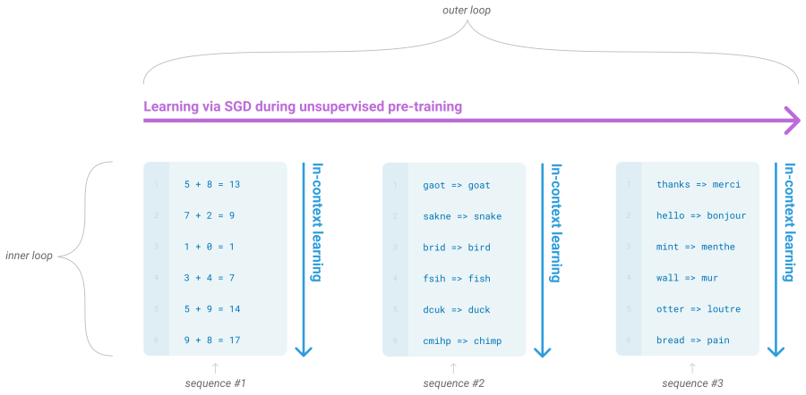
解决这些问题的一个潜在途径是元学习——在语言模型的背景下，这意味着模型在训练时发展出一套广泛的技能和模式识别能力，然后在推理时使用这些能力来快速适应或识别所需任务（如图 1.1 所示）。最近的工作 [RWC+19] 尝试通过我们称之为“上下文学习”的方法来实现这一点，即使用预训练语言模型的文本输入作为任务规范的一种形式：模型以自然语言指令和/或任务的几个演示为条件，然后预期通过简单地预测下一个内容来完成该任务的更多实例。
尽管已经显示出一些初步的前景，但这种方法的结果仍然远不如微调——例如，[RWC+19] 在 Natural Questions 上仅达到 4%，即使其 55 F1 的 CoQa 结果现在也比最先进水平落后 35 分以上。元学习显然需要大量改进才能作为解决语言任务的实用方法。
语言建模的另一个近期趋势可能提供前进的方向。近年来，Transformer 语言模型的容量大幅增加，从 1 亿参数 [RNSS18] 到 3 亿参数 [DCLT18]，到 15 亿参数 [RWC+19]，到 80 亿参数 [SPP+19]，110 亿参数 [RSR+19]，最后到 170 亿参数 [Tur20]。每次增加都带来了文本合成和/或下游 NLP 任务的改进，并且有证据表明，与许多下游任务良好相关的对数损失随着规模遵循平滑的改进趋势 [KMH+20]。由于上下文学习涉及在模型参数中吸收许多技能和任务，因此上下文学习能力可能随规模显示出类似的强劲增长。
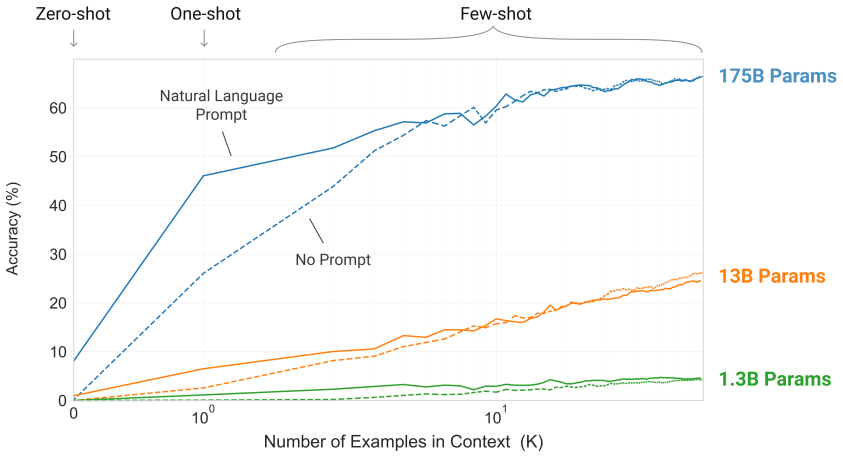
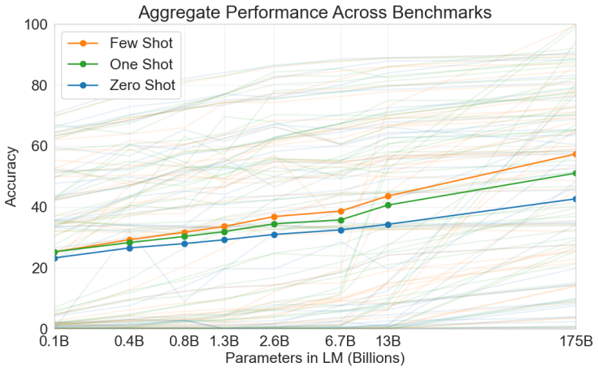
在本文中，我们通过训练一个 1750 亿参数的自回归语言模型（我们称之为 GPT-3）并测量其上下文学习能力来检验这一假设。具体来说，我们在超过两打的 NLP 数据集以及几个设计用于测试对训练集中不太可能直接包含的任务进行快速适应的新任务上评估 GPT-3。对于每个任务，我们在 3 种条件下评估 GPT-3：(a) “少样本学习”，或上下文学习，我们允许尽可能多的演示适合模型的上下文窗口（通常为 10 到 100 个），(b) “单样本学习”，我们只允许一个演示，以及 (c) “零样本”学习，不允许演示，只给模型自然语言指令。原则上 GPT-3 也可以在传统的微调设置中评估，但我们将其留待未来工作。
图 1.2 说明了我们研究的条件，并展示了一个简单任务的少样本学习，该任务要求模型从单词中删除多余符号。模型性能随着自然语言任务描述和模型上下文中示例数量 \(K\) 的增加而提高。少样本学习也随着模型大小而显著提高。尽管这种情况下的结果特别引人注目，但模型大小和上下文示例数量的总体趋势适用于我们研究的大多数任务。我们强调，这些“学习”曲线不涉及梯度更新或微调，只是增加作为条件的演示数量。
总体而言，在 NLP 任务上，GPT-3 在零样本和单样本设置下取得了有希望的结果，在少样本设置下有时可以与最先进水平竞争甚至偶尔超越（尽管最先进水平由微调模型保持）。例如，GPT-3 在零样本设置下在 CoQA 上达到 81.5 F1，在单样本设置下达到 84.0 F1，在少样本设置下达到 85.0 F1。类似地，GPT-3 在零样本设置下在 TriviaQA 上达到 64.3% 的准确率，在单样本设置下达到 68.0%，在少样本设置下达到 71.2%，最后一项相对于在相同闭卷设置下运行的微调模型是最先进的。
GPT-3 在旨在测试快速适应或即时推理的任务上也显示出单样本和少样本熟练度，这些任务包括解扰单词、执行算术运算以及在只看到一次定义后在句子中使用新词。我们还表明，在少样本设置下，GPT-3 可以生成人类评估者难以与人类生成的文章区分开的合成新闻文章。
同时，我们也发现了一些即使达到 GPT-3 规模少样本性能仍然困难的任务。这包括自然语言推断任务如 ANLI 数据集，以及一些阅读理解数据集如 RACE 或 QuAC。通过广泛描述 GPT-3 的优势和劣势（包括这些局限性），我们希望激发对语言模型少样本学习的研究，并引起对最需要进展领域的关注。
图 1.3 可以看到总体结果的启发式感受，它汇总了各种任务（尽管它本身不应被视为严格或有意义的基准）。
我们还对“数据污染”进行了系统研究——这是在 Common Crawl 等数据集上训练高容量模型时日益严重的问题，因为此类内容通常存在于网络上，因此测试数据集的内容可能包含在训练数据中。在本文中，我们开发了系统工具来测量数据污染并量化其扭曲效应。尽管我们发现数据污染对 GPT-3 在大多数数据集上的性能影响很小，但我们确实发现了一些可能夸大结果的数据集，我们或者不报告这些数据集的结果，或者根据严重程度用星号标记。
除上述内容外，我们还训练了一系列较小的模型（从 1.25 亿参数到 130 亿参数），以比较它们在零样本、单样本和少样本设置下与 GPT-3 的性能。总体而言，对于大多数任务，我们发现在所有三种设置下模型容量都呈现出相对平滑的缩放；一个值得注意的模式是零样本、单样本和少样本性能之间的差距通常随模型容量而增大，这可能表明较大的模型是更熟练的元学习器。
最后，鉴于 GPT-3 展现的广泛能力，我们讨论了关于偏见、公平性和更广泛社会影响的担忧，并尝试对 GPT-3 在这方面的特征进行初步分析。
本文的其余部分组织如下。第 2 节描述了我们训练和评估 GPT-3 的方法。第 3 节展示了在零样本、单样本和少样本设置下全范围任务的结果。第 4 节讨论数据污染（训练-测试重叠）问题。第 5 节讨论 GPT-3 的局限性。第 6 节讨论更广泛的影响。第 7 节回顾相关工作，第 8 节总结。
我们的基本预训练方法，包括模型、数据和训练，与 [RWC+19] 中描述的过程相似，只是相对直接地扩大了模型大小、数据集大小和多样性以及训练长度。我们对上下文学习的使用也与 [RWC+19] 相似，但在本工作中，我们系统地探索了在上下文中学习的不同设置。因此，本节首先明确定义和对比我们将要评估 GPT-3 或原则上可以评估 GPT-3 的不同设置。这些设置可以看作位于一个频谱上，该频谱反映了它们倾向于依赖多少任务特定数据。具体来说，我们可以识别出这个频谱上的至少四个点（参见图 2.1 的说明）：
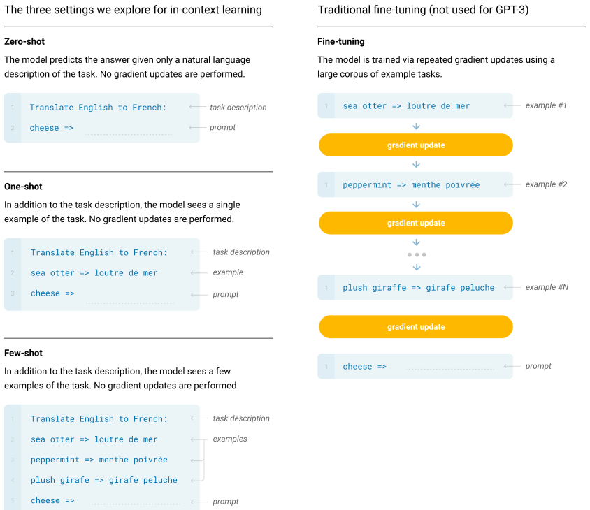
图 2.1 展示了使用英译法示例的四种方法。在本文中，我们关注零样本、单样本和少样本，目的是将它们不作为相互竞争的替代方案进行比较，而是作为不同的问题设置进行比较，这些设置在特定基准上的性能和样本效率之间提供了不同的权衡。我们特别强调少样本结果，因为其中许多仅略微落后于最先进的微调模型。然而，最终单样本，甚至有时零样本，似乎是与人类性能最公平的比较，并且是未来工作的重要目标。
下面的第 2.1-2.3 节分别给出了我们的模型、训练数据和训练过程的细节。第 2.4 节讨论了我们如何进行少样本、单样本和零样本评估的细节。
| 模型名称 | 参数数量 | 层数 | d_model | 注意力头数 | 批量大小 | 学习率 |
|---|---|---|---|---|---|---|
| GPT-3 Small | 125M | 12 | 768 | 12 | 0.5M | 6.0 × 10⁻⁴ |
| GPT-3 Medium | 350M | 24 | 1024 | 16 | 0.5M | 3.0 × 10⁻⁴ |
| GPT-3 Large | 760M | 24 | 1536 | 16 | 0.5M | 2.5 × 10⁻⁴ |
| GPT-3 XL | 1.3B | 24 | 2048 | 24 | 1M | 2.0 × 10⁻⁴ |
| GPT-3 2.7B | 2.7B | 32 | 2560 | 32 | 1M | 1.6 × 10⁻⁴ |
| GPT-3 6.7B | 6.7B | 32 | 4096 | 32 | 2M | 1.2 × 10⁻⁴ |
| GPT-3 13B | 13.0B | 40 | 5140 | 40 | 2M | 1.0 × 10⁻⁴ |
| GPT-3 175B | 175.0B | 96 | 12288 | 96 | 3.2M | 0.6 × 10⁻⁴ |
我们使用与 GPT-2 [RWC+19] 相同的模型和架构，包括其中描述的修改后的初始化、预归一化和可逆分词，不同之处在于我们在 Transformer 层中使用了交替的密集和局部带状稀疏注意力模式，类似于 Sparse Transformer [CGRS19]。为了研究 ML 性能对模型大小的依赖关系，我们训练了 8 种不同大小的模型，范围跨越三个数量级，从 1.25 亿参数到 1750 亿参数，最后一个是 GPT-3。先前的工作 [KMH+20] 表明，在足够训练数据的情况下，验证损失的缩放应近似为关于大小的平滑幂律；训练多种不同大小的模型使我们能够检验这一假设，既针对验证损失也针对下游语言任务。
表 2.1 显示了我们的 8 个模型的大小和架构。这里 \(n_{\mathrm{params}}\) 是可训练参数的总数，\(n_{\mathrm{layers}}\) 是层数，\(d_{\mathrm{model}}\) 是每个瓶颈层中的单元数（我们总是使前馈层的大小是瓶颈层的四倍，\(d_{\mathrm{ff}}=4*d_{\mathrm{model}}\)），\(d_{\mathrm{head}}\) 是每个注意力头的维度。所有模型使用 \(n_{\mathrm{ctx}}=2048\) 个词元的上下文窗口。我们沿深度和宽度维度将模型划分到多个 GPU 上，以最小化节点之间的数据传输。每个模型的具体架构参数是根据计算效率和 GPU 上模型布局的负载平衡来选择的。先前的工作 [KMH+20] 表明，在合理的宽范围内，验证损失对这些参数不强烈敏感。
语言模型的数据集迅速扩大，最终形成了 Common Crawl 数据集 [RSR+19]，包含近一万亿词。这种规模的数据集足以训练我们最大的模型，而无需对同一序列进行两次更新。然而，我们发现未过滤或轻度过滤的 Common Crawl 版本的质量往往低于更精选的数据集。因此，我们采取了三步来提高数据集的平均质量：(1) 我们基于与一系列高质量参考语料的相似性下载并过滤了 Common Crawl 的一个版本；(2) 我们在文档级别进行了模糊去重，在数据集内部和跨数据集进行，以防止冗余并保持我们的留出验证集作为过拟合的准确度量；(3) 我们还将已知的高质量参考语料库添加到训练混合中，以扩充 Common Crawl 并增加其多样性。
前两点（Common Crawl 的处理）的细节在附录 A 中描述。对于第三点，我们添加了几个精选的高质量数据集，包括 WebText 数据集 [RWC+19] 的扩展版本（通过更长时间段抓取链接收集，首次在 [KMH+20] 中描述）、两个基于互联网的书籍语料库（Books1 和 Books2）以及英语维基百科。
表 2.2 显示了我们在训练中使用的最终数据集混合。Common Crawl 数据从 2016 年至 2019 年的 41 个月度 Common Crawl 分片下载，在过滤前构成 45TB 压缩明文，过滤后为 570GB，大致相当于 4000 亿字节对编码词元。请注意，在训练期间，数据集不是按比例采样的，而是我们认为质量更高的数据集被更频繁地采样，因此 Common Crawl 和 Books2 数据集在训练期间被采样少于一次，而其他数据集被采样 2-3 次。这基本上接受了少量过拟合，以换取更高质量的训练数据。
| 数据集 | 数量（词元） | 训练混合中的权重 | 训练 300B 词元时的轮数 |
|---|---|---|---|
| Common Crawl（过滤后） | 4100 亿 | 60% | 0.44 |
| WebText2 | 190 亿 | 22% | 2.9 |
| Books1 | 120 亿 | 8% | 1.9 |
| Books2 | 550 亿 | 8% | 0.43 |
| Wikipedia | 30 亿 | 3% | 3.4 |
对于在广泛互联网数据上预训练的语言模型，尤其是具有记忆大量内容能力的大型模型，一个主要的方法论担忧是下游任务的测试集或开发集在预训练期间被无意中看到，从而可能污染这些任务。为了减少这种污染，我们搜索并试图消除与本文研究的所有基准的开发集和测试集的任何重叠。不幸的是，过滤中的一个错误导致我们忽略了一些重叠，而且由于训练成本，重新训练模型是不可行的。在第 4 节中，我们描述了剩余重叠的影响，在未来的工作中，我们将更积极地消除数据污染。
正如 [KMH+20, MKAT18] 所发现的，较大的模型通常可以使用较大的批量大小，但需要较小的学习率。我们在训练期间测量梯度噪声尺度，并用它来指导我们选择批量大小 [MKAT18]。表 2.1 显示了我们使用的参数设置。为了在不耗尽内存的情况下训练较大的模型，我们在每个矩阵乘法内使用模型并行性，并在网络层之间使用模型并行性。所有模型都在 Microsoft 提供的高带宽集群的一部分上使用 V100 GPU 进行训练。训练过程和超参数设置的细节在附录 B 中描述。
对于少样本学习，我们通过从该任务的训练集中随机抽取 \(K\) 个示例作为条件来评估评估集中的每个示例，根据任务不同用 1 或 2 个换行符分隔。对于 LAMBADA 和 Storycloze，没有可用的监督训练集，因此我们从开发集中抽取条件示例并在测试集上评估。对于 Winograd（原始版本，不是 SuperGLUE 版本），只有一个数据集，因此我们直接从其中抽取条件示例。
\(K\) 可以是 0 到模型上下文窗口允许的最大值之间的任何值，所有模型的上下文窗口都是 \(n_{\mathrm{ctx}}=2048\)，通常可以容纳 10 到 100 个示例。较大的 \(K\) 值通常但并非总是更好，因此当有单独的开发和测试集可用时，我们在开发集上尝试几个 \(K\) 值，然后在测试集上运行最佳值。对于某些任务（见附录 G），除了演示之外（或者对于 \(K=0\) 的情况，代替演示），我们还使用自然语言提示。
对于涉及从多个选项中选择一个正确补全的任务（多项选择），我们提供 \(K\) 个上下文加正确补全的示例，然后是一个仅包含上下文的示例，并比较每个补全的语言模型似然。对于大多数任务，我们比较每个词元的似然（以进行长度归一化），然而在少数数据集（ARC、OpenBookQA 和 RACE）上，我们通过用每个补全的无条件概率进行归一化（计算 \(\frac{P(\mathrm{completion}|\mathrm{context})}{P(\mathrm{completion}|\mathrm{answer\_context})}\)，其中 answer_context 是字符串“Answer: ”或“A: ”，用于提示补全应该是一个答案，但其他方面是通用的），在开发集上测量获得了额外的收益。
对于涉及二元分类的任务，我们给选项赋予更具语义意义的名称（例如“True”或“False”而不是 0 或 1），然后像多项选择一样处理该任务；我们有时也以类似于 [RSR+19] 的方式构建任务（详见附录 G）。
对于自由形式的补全任务，我们使用与 [RSR+19] 相同的参数的束搜索：束宽为 4，长度惩罚为 \(\alpha=0.6\)。我们使用 F1 相似度分数、BLEU 或精确匹配来对模型进行评分，具体取决于手头数据集的标准。
最终结果在公开可用的测试集上报告，针对每种模型大小和学习设置（零样本、单样本和少样本）。当测试集是私有的时，我们的模型通常太大而无法在测试服务器上容纳，因此我们在开发集上报告结果。我们确实在少数数据集（SuperGLUE、TriviaQA、PiQA）上提交到测试服务器，并且只提交 200B 少样本结果，其他所有内容报告开发集结果。
在图 3.1 中，我们展示了第 2 节中描述的 8 个模型的训练曲线。对于此图，我们还包括 6 个额外的超小模型，参数少至 100,000。正如在 [KMH+20] 中观察到的，在有效利用训练计算时，语言建模性能遵循幂律。在将这一趋势扩展两个数量级后，我们仅观察到与幂律的轻微偏离（如果有的话）。人们可能会担心交叉熵损失的这些改进仅仅来自于对训练语料库虚假细节的建模。然而，我们将在以下各节中看到，交叉熵损失的改进会在广泛的自然语言任务中带来一致的性能提升。
下面，我们在广泛的数据集上评估第 2 节中描述的 8 个模型（1750 亿参数的 GPT-3 和 7 个较小的模型）。我们将数据集分为 9 个类别，代表大致相似的任务。
在第 3.1 节中，我们评估传统的语言建模任务以及类似于语言建模的任务，如完形填空任务和句子/段落补全任务。在第 3.2 节中，我们评估“闭卷”问答任务：需要使用存储在模型参数中的信息来回答常识问题的任务。在第 3.3 节中，我们评估模型在语言之间翻译的能力（尤其是单样本和少样本）。在第 3.4 节中，我们评估模型在 Winograd Schema 类任务上的性能。在第 3.5 节中，我们评估涉及常识推理或问答的数据集。在第 3.6 节中，我们评估阅读理解任务，在第 3.7 节中，我们评估 SuperGLUE 基准套件，在第 3.8 节中，我们简要探索 NLI。最后，在第 3.9 节中，我们发明了一些额外的任务，专门设计用于探测上下文学习能力——这些任务侧重于即时推理、适应技能或开放式文本合成。我们在少样本、单样本和零样本设置下评估所有任务。
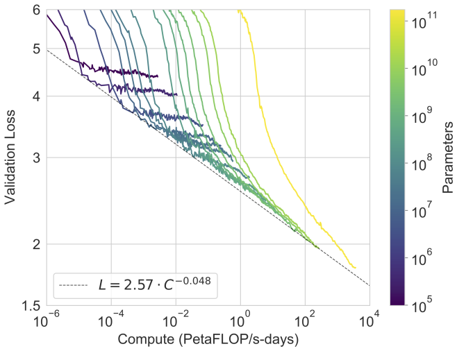
| 设置 | PTB |
|---|---|
| SOTA（零样本） | 35.8a |
| GPT-3 零样本 | 20.5 |
在本节中，我们测试 GPT-3 在传统语言建模任务以及相关任务上的性能，这些任务涉及预测单个感兴趣的词、完成句子或段落，或在文本的可能补全之间进行选择。
我们计算了在 [RWC+19] 中测量的 Penn Tree Bank (PTB) [MKM+94] 数据集上的零样本困惑度。我们省略了该工作中的 4 个维基百科相关任务，因为它们完全包含在我们的训练数据中，并且我们也省略了十亿词基准，因为数据集中有很大一部分包含在我们的训练集中。PTB 由于早于现代互联网而避免了这些问题。我们最大的模型在 PTB 上以 15 分的显著优势创造了新的 SOTA，实现了 20.50 的困惑度。请注意，由于 PTB 是传统的语言建模数据集，它没有明确的示例分离来定义单样本或少样本评估，因此我们仅测量零样本。
LAMBADA 数据集 [PKL+16] 测试文本中的长距离依赖建模——模型被要求预测需要阅读一段上下文的句子的最后一个词。最近有人提出，语言模型的持续缩放在这个困难基准上的回报正在递减。[BHT+20] 反思了两个最近的最先进结果（[SPP+19] 和 [Tur20]）之间模型大小翻倍所带来的 1.5% 的小幅改进，并认为“继续将硬件和数据大小扩大几个数量级不是前进的道路”。我们发现这条道路仍然有希望，在零样本设置下，GPT-3 在 LAMBADA 上达到 76%，比之前的最先进水平提高了 8%。
LAMBADA 也展示了少样本学习的灵活性，因为它提供了一种解决该数据集经典问题的方法。尽管 LAMBADA 中的补全总是句子的最后一个词，但标准语言模型无法知道这个细节。因此，它不仅给正确的结尾赋予概率，也给段落的其他有效续写赋予概率。过去，这个问题已通过停用词过滤器 [RWC+19]（禁止“续写”词）部分解决。少样本设置改为允许我们将任务“框定”为完形填空测试，并允许语言模型从示例中推断出需要恰好一个词的补全。我们使用以下填空格式：
Alice was friends with Bob. Alice went to visit her friend → Bob
George bought some baseball equipment, a ball, a glove, and a →
当以这种方式格式化的示例呈现时，GPT-3 在少样本设置下达到 86.4% 的准确率，比之前的最先进水平提高了 18% 以上。我们观察到少样本性能随模型大小而显著提高。虽然这种设置使最小模型的性能降低了近 20%，但对于 GPT-3，它将准确率提高了 10%。最后，填空方法在单样本设置下效果不佳，其表现总是比零样本设置差。也许这是因为所有模型仍然需要几个示例才能识别模式。
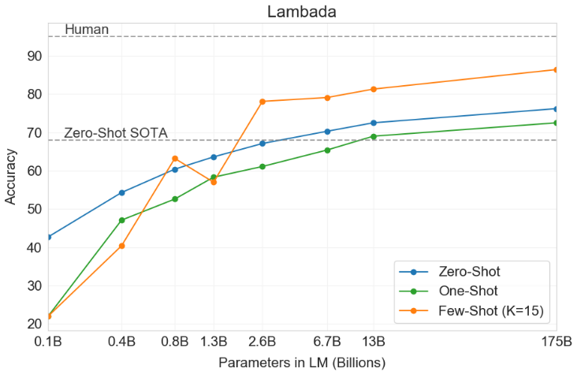
| 设置 | LAMBADA | HellaSwag | StoryCloze |
|---|---|---|---|
| GPT-3 零样本 | 76.2 | 78.9 | 83.2 |
| GPT-3 单样本 | 72.5 | 78.1 | 87.7 |
| GPT-3 少样本 | 86.4 | 79.3 | 87.7 |
HellaSwag 数据集 [ZHB+19] 涉及为故事或一组指令选择最佳结尾。这些示例是通过对抗性挖掘构建的，对语言模型来说很难，但对人类来说仍然很容易（人类达到 95.6% 的准确率）。GPT-3 在单样本设置下达到 78.1% 的准确率，在少样本设置下达到 79.3% 的准确率，超过了微调的 15 亿参数语言模型 75.4% 的准确率 [ZHR+19]，但仍远低于微调多任务模型 ALUM 达到的总体 SOTA 85.6%。
接下来，我们在 StoryCloze 2016 数据集 [MCH+16] 上评估 GPT-3，该数据集涉及为五句话长的故事选择正确的结尾句。在这里，GPT-3 在零样本设置下达到 83.2%，在少样本设置下达到 87.7%（\(K=70\)）。这仍然比使用基于 BERT 的模型 [LDL19] 的微调 SOTA 低 4.1%，但比以前零样本结果提高了约 10%。
在本节中，我们测量 GPT-3 回答有关广泛事实知识问题的能力。由于可能的查询量巨大，这项任务通常通过使用信息检索系统来查找相关文本，并结合一个学习根据问题和检索到的文本生成答案的模型来处理。由于这种设置允许系统搜索并以其可能包含答案的文本为条件，因此被称为“开卷”。[RRS20] 最近证明，大型语言模型可以在不以辅助信息为条件的情况下直接回答问题，性能出奇地好。他们将这种更严格的评估设置称为“闭卷”。他们的工作表明，即使更高容量的模型也可以表现得更好，我们用 GPT-3 检验了这一假设。我们在 [RRS20] 中的 3 个数据集上评估 GPT-3：Natural Questions [KPR+19]、WebQuestions [BCFL13] 和 TriviaQA [JCWZ17]，使用相同的划分。请注意，除了所有结果都在闭卷设置中之外，我们使用的少样本、单样本和零样本评估代表了比之前闭卷 QA 工作更严格的设置：除了不允许外部内容外，也不允许在 Q&A 数据集本身上进行微调。
GPT-3 的结果如表 3.3 所示。在 TriviaQA 上，我们在零样本设置下达到 64.3%，在单样本设置下达到 68.0%，在少样本设置下达到 71.2%。零样本结果已经比微调的 T5-11B 高出 14.2%，并且比在预训练期间使用针对 Q&A 定制的跨度预测的版本高出 3.8%。单样本结果提高了 3.7%，与一个开域 QA 系统的 SOTA 相匹配，该系统不仅进行微调，还利用学习到的检索机制，在由 2100 万文档组成的 153 亿参数稠密向量索引上进行检索 [LPP+20]。GPT-3 的少样本结果在此基础上进一步提高 3.2%。
在 WebQuestions (WebQs) 上，GPT-3 在零样本设置下达到 14.4%，在单样本设置下达到 25.3%，在少样本设置下达到 41.5%。相比之下，微调的 T5-11B 为 37.4%，微调的 T5-11B+SSM 为 44.7%，后者使用了针对 Q&A 的预训练程序。GPT-3 在少样本设置下接近最先进微调模型的性能。值得注意的是，与 TriviaQA 相比，WebQS 从零样本到少样本的提升要大得多（事实上其零样本和单样本性能很差），这可能表明 WebQs 问题与 GPT-3 的分布不符。尽管如此，GPT-3 似乎能够适应这种分布，在少样本设置中恢复了强劲的性能。
在 Natural Questions (NQs) 上，GPT-3 在零样本设置下达到 14.6%，在单样本设置下达到 23.0%，在少样本设置下达到 29.9%，而微调的 T5 1B+SSM 为 36.6%。与 WebQS 类似，从零样本到少样本的大幅提升可能表明存在分布偏移，也可能解释了与 TriviaQA 和 WebQS 相比竞争力较弱的表现。特别是，NQs 中的问题往往针对维基百科上非常细粒度的知识，这可能考验 GPT-3 的容量和广泛的预训练分布的极限。
总体而言，在三个数据集中的一个上，GPT-3 的单样本与开域微调 SOTA 相匹配。在另外两个数据集上，尽管没有使用微调，它也接近闭卷 SOTA 的性能。在所有 3 个数据集上，我们发现性能随模型大小非常平滑地扩展（图 3.3 和附录 H 图 H.7），这可能反映了模型容量直接转化为模型中吸收的更多“知识”的观点。
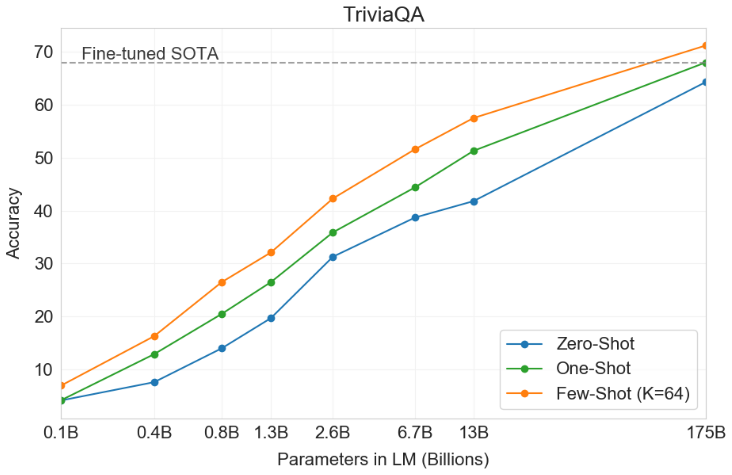
| 设置 | Natural Questions | WebQuestions | TriviaQA |
|---|---|---|---|
| GPT-3 零样本 | 14.6 | 14.4 | 64.3 |
| GPT-3 单样本 | 23.0 | 25.3 | 68.0 |
| GPT-3 少样本 | 29.9 | 41.5 | 71.2 |
对于 GPT-2，由于容量问题，对多语言文档集合使用了过滤器来生成仅英语数据集。即使进行了这种过滤，GPT-2 也显示出一些多语言能力的证据，并且在法语和英语之间进行翻译时表现不俗，尽管只训练了 10 兆字节的剩余法语文本。由于我们将容量从 GPT-2 增加到 GPT-3 超过两个数量级，我们也扩大了训练数据集的范围以包含更多其他语言的表示，尽管这仍然是进一步改进的领域。如 2.2 节所述，我们的大部分数据来自原始 Common Crawl，仅进行了基于质量的过滤。尽管 GPT-3 的训练数据仍然主要是英语（按词数计 93%），但它也包括 7% 的其他语言文本。这些语言在补充材料中有记录。为了更好地理解翻译能力，我们还将分析扩展到两种另外常用研究的语言：德语和罗马尼亚语。
现有的无监督机器翻译方法通常将一对单语数据集上的预训练与回译 [SHB15] 结合起来，以受控方式桥接两种语言。相比之下，GPT-3 从混合多种语言的训练数据中学习，以自然的方式在词、句子和文档级别将它们组合在一起。GPT-3 还使用单一训练目标，该目标未针对任何特定任务进行定制或设计。然而，我们的单样本/少样本设置与之前的无监督工作并不严格可比，因为它们使用了少量配对示例（1 或 64 个）。这相当于最多一两页的上下文训练数据。
结果如表 3.4 所示。零样本 GPT-3 仅接收自然语言任务描述，仍然低于最近的无监督 NMT 结果。然而，仅提供一个示例演示即可将每个翻译任务的性能提高超过 7 BLEU，并接近先前工作的竞争性能。在完整的少样本设置中，GPT-3 进一步提高了 4 BLEU，使其平均性能与之前的无监督 NMT 工作相似。GPT-3 的性能因语言方向而存在明显偏差。对于所研究的三种输入语言，GPT-3 在翻译成英语时显著优于之前的无监督 NMT 工作，但在翻译成其他方向时表现不佳。En-Ro 的性能是一个明显的异常值，比之前的无监督 NMT 工作差 10 BLEU 以上。这可能是由于重复使用了 GPT-2 的字节级 BPE 分词器，该分词器是为几乎完全英语的训练数据集开发的。对于 Fr-En 和 De-En，少样本 GPT-3 优于我们能找到的最佳监督结果，但由于我们对文献不熟悉，并且这些似乎是非竞争性基准，我们不怀疑这些结果代表真正的最先进水平。对于 Ro-En，少样本 GPT-3 的性能在总体 SOTA 的 0.5 BLEU 以内，该 SOTA 是通过无监督预训练、在 608K 标记示例上进行监督微调以及回译 [LHCG19b] 的组合实现的。
最后，在所有语言对和所有三种设置（零样本、单样本和少样本）中，性能都随模型容量呈现平滑的改进趋势。这在图 3.4 中展示了少样本结果，所有三种设置的缩放见附录 H。
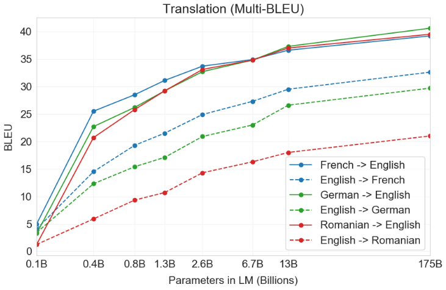
| 任务 | GPT-3 零样本 | GPT-3 单样本 | GPT-3 少样本 |
|---|---|---|---|
| Fr→En | 25.2 | 32.5 | 39.2 |
| En→Fr | 21.6 | 32.4 | 37.8 |
| De→En | 27.2 | 35.5 | 40.6 |
| En→De | 20.1 | 27.6 | 32.6 |
| Ro→En | 19.9 | 28.4 | 39.4 |
| En→Ro | 14.1 | 21.0 | 24.8 |
Winograd Schemas Challenge [LDM12] 是 NLP 中的经典任务，涉及确定代词指代哪个词，当代词在语法上含糊但在语义上对人类来说明确时。最近微调的语言模型在原始 Winograd 数据集上已达到接近人类的性能，但更困难的版本（如对抗性挖掘的 Winogrande 数据集 [SBBC19]）仍然显著落后于人类性能。我们在 Winograd 和 Winogrande 上测试 GPT-3 的性能，照例在零样本、单样本和少样本设置下进行。
在 Winograd 上，我们在原始的 273 个 Winograd schema 集上测试 GPT-3，使用与 [RWC+19] 相同的“部分评估”方法。请注意，此设置与 SuperGLUE 基准中的 WSC 任务略有不同，后者以二元分类形式呈现，需要实体提取才能转换为此节中描述的形式。在 Winograd 上，GPT-3 在零样本、单样本和少样本设置下分别达到 88.3%、89.7% 和 88.6%，没有明显的上下文学习，但在所有情况下都取得了强劲的结果，仅比最先进水平和估计的人类性能低几个百分点。我们注意到污染分析在训练数据中发现了一些 Winograd schema，但这似乎对结果影响很小（见第 4 节）。
在更困难的 Winogrande 数据集上，我们确实看到了上下文学习的收益：GPT-3 在零样本设置下达到 70.2%，在单样本设置下达到 73.2%，在少样本设置下达到 77.7%。相比之下，微调的 RoBERTa 模型达到 79%，最先进水平是使用微调的高容量模型（T5）达到的 84.6%，而 [SBBC19] 报告的人类在该任务上的性能为 94.0%。
接下来，我们考虑三个试图捕捉物理或科学推理的数据集，这不同于句子补全、阅读理解或广泛知识问答。第一个是 PhysicalQA (PIQA) [BZB+19]，它询问有关物理世界如何运作的常识问题，旨在探测对世界的具身理解。GPT-3 在零样本设置下达到 81.0% 的准确率，在单样本设置下达到 80.5%，在少样本设置下达到 82.8%（最后一项在 PIQA 的测试服务器上测量）。这与微调 RoBERTa 的先前最先进水平 79.4% 相比有利。PIQA 显示随模型大小的缩放相对较浅，并且仍比人类性能差 10% 以上，但 GPT-3 的少样本甚至零样本结果都优于当前的最先进水平。我们的分析将 PIQA 标记为潜在的数据污染问题（尽管隐藏了测试标签），因此我们保守地用星号标记结果。详见第 4 节。
ARC [CCE+18] 是一个从 3 到 9 年级科学考试中收集的多项选择题数据集。在数据集的“挑战”版本上（该版本已过滤为简单的统计或信息检索方法无法正确回答的问题），GPT-3 在零样本设置下达到 51.4% 的准确率，在单样本设置下达到 53.2%，在少样本设置下达到 51.5%。这正在接近 UnifiedQA [KKS+20] 中微调 RoBERTa 基线（55.9%）的性能。在数据集的“简单”版本上（提到的任一基线方法都能正确回答的问题），GPT-3 分别达到 68.8%、71.2% 和 70.1%，略高于 [KKS+20] 中微调的 RoBERTa 基线。然而，这两个结果仍然远低于 UnifiedQA 达到的总体 SOTA，后者在挑战集上比 GPT-3 的少样本结果高 27%，在简单集上高 22%。
在 OpenBookQA [MCKS18] 上，GPT-3 从零样本到少样本设置有显著提高，但仍比总体 SOTA 低 20 多分。GPT-3 的少样本性能与排行榜上微调的 BERT Large 基线相似。
总体而言，GPT-3 的上下文学习在常识推理任务上显示出混合结果，在 PIQA 和 ARC 上，单样本和少样本学习设置仅观察到小幅且不一致的收益，但在 OpenBookQA 上观察到显著改进。GPT-3 在所有评估设置中都创下了新 PIQA 数据集的 SOTA。
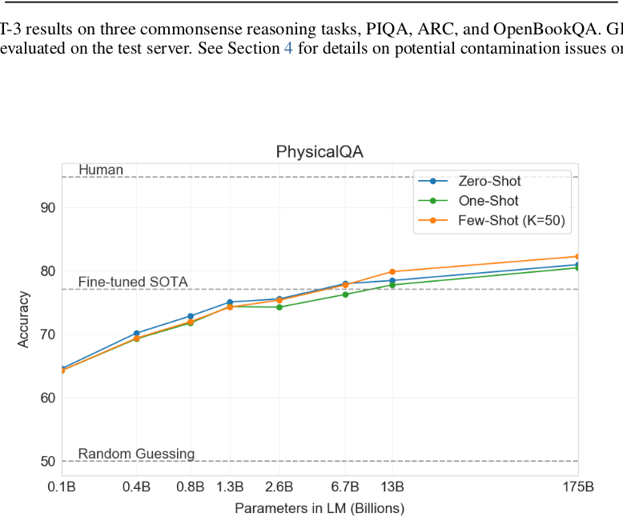
接下来，我们评估 GPT-3 在阅读理解任务上的表现。我们使用了一套 5 个数据集，包括对话和单问题设置中的抽象式、多项选择和基于跨度的答案格式。我们观察到 GPT-3 在这些数据集上的性能差异很大，这表明其能力因答案格式而异。总的来说，我们观察到 GPT-3 与每个相应数据集上使用上下文表示训练的初始基线和早期结果相当。
GPT-3 在 CoQA [RCM19]（一个自由形式的对话数据集）上表现最好（与人类基线相差 3 分以内），在 QuAC [CHI+18]（一个需要对结构化对话行为进行建模并选择师生交互答案跨度的数据集）上表现最差（比 ELMo 基线低 13 F1）。在 DROP [DWD+19]（一个在阅读理解背景下测试离散推理和算术的数据集）上，GPT-3 在少样本设置下优于原始论文中微调的 BERT 基线，但仍远低于人类性能和用符号系统增强神经网络的最先进方法 [RLL+19]。在 SQuAD 2.0 [RJL18] 上，GPT-3 展示了其少样本学习能力，与零样本设置相比提高了近 10 F1（达到 69.8）。这使其略优于原始论文中最佳微调结果。在 RACE [LXL+17]（一个初中和高中英语考试的多项选择数据集）上，GPT-3 表现相对较弱，仅与最早使用上下文表示的工作具有竞争力，仍比 SOTA 落后 45%。
为了更好地汇总 NLP 任务的结果，并更系统地与 BERT 和 RoBERTa 等流行模型进行比较，我们还在标准数据集集合 SuperGLUE 基准 [WPN+19] 上评估 GPT-3。GPT-3 在 SuperGLUE 数据集上的测试集性能如表 3.8 所示。在少样本设置中，我们对所有任务使用了 32 个示例，从训练集中随机抽取。对于除 WSC 和 MultiRC 之外的所有任务，我们为每个问题在上下文中抽取了一组新的示例。对于 WSC 和 MultiRC，我们使用从训练集中随机抽取的同一组示例作为所有评估问题的上下文。
我们观察到 GPT-3 在不同任务上的性能差异很大。在 COPA 和 ReCoRD 上，GPT-3 在单样本和少样本设置下接近 SOTA 性能，COPA 仅差几分，在排行榜上获得第二名，第一名由微调的 110 亿参数模型（T5）保持。在 WSC 上，性能仍然相对强劲，在少样本设置下达到 80.1%（请注意，如第 3.4 节所述，GPT-3 在原始 Winograd 数据集上达到 88.6%）。在 BoolQ、MultiRC 和 RTE 上，性能合理，大致与微调的 BERT-Large 相当。在 CB 上，我们在少样本设置下看到了 75.6% 的生命迹象。
WiC 是一个明显的弱点，少样本性能为 49.4%（随机水平）。我们为 WiC（涉及确定一个词在两个句子中是否以相同含义使用）尝试了多种不同的措辞和表述，但都无法取得强劲的性能。这暗示了一种现象，将在下一节（讨论 ANLI 基准）中更加清晰——GPT-3 在少样本或单样本设置下，在一些涉及比较两个句子或片段的任务上似乎较弱，例如一个词在两个句子中是否以相同方式使用（WiC）、一个句子是否是另一个句子的释义，或者一个句子是否蕴涵另一个句子。这也可以解释 RTE 和 CB 相对较低的分数，它们也遵循这种格式。尽管存在这些弱点，GPT-3 在八项任务中的四项上仍然优于微调的 BERT-large，并且在两项任务上接近由微调的 110 亿参数模型保持的最先进水平。
最后，我们注意到少样本 SuperGLUE 分数随着模型大小和上下文示例数量的增加而稳步提高，显示出上下文学习带来的越来越大的好处（图 3.8）。我们将 \(K\) 扩大到每个任务 32 个示例，超过这个点额外的示例将无法可靠地放入我们的上下文。在扫描 \(K\) 值时，我们发现 GPT-3 每个任务需要不到 8 个总示例就能在整体 SuperGLUE 分数上超过微调的 BERT-Large。
| 指标 | 微调 SOTA | 微调 BERT-Large | GPT-3 少样本 |
|---|---|---|---|
| SuperGLUE 平均 | 89.0 | 69.0 | 71.8 |
| BoolQ 准确率 | 91.0 | 77.4 | 76.4 |
| CB 准确率 | 96.9 | 83.6 | 75.6 |
| CB F1 | 93.9 | 75.7 | 52.0 |
| COPA 准确率 | 94.8 | 70.6 | 92.0 |
| MultiRC 准确率 | 62.3 | 24.1 | 30.5 |
| MultiRC F1 | 88.2 | 70.0 | 75.4 |
| ReCoRD 准确率 | 92.5 | 71.3 | 90.2 |
| ReCoRD F1 | 93.3 | 72.0 | 91.1 |
| RTE 准确率 | 92.5 | 71.7 | 69.0 |
| WiC 准确率 | 76.1 | 69.6 | 49.4 |
| WSC 准确率 | 93.8 | 64.6 | 80.1 |
自然语言推断 (NLI) [Fyo00] 关注理解两个句子之间关系的能力。在实践中，这项任务通常被构建为二分类或三分类问题，模型对第二句是否逻辑上从第一句推出、与第一句矛盾或可能为真（中性）进行分类。SuperGLUE 包含一个 NLI 数据集 RTE，它评估任务的二元版本。在 RTE 上，只有最大版本的 GPT-3 在任何评估设置下都明显优于随机（56%），但在少样本设置中，GPT-3 的表现与单任务微调的 BERT Large 相似。我们还在最近引入的对抗性自然语言推断 (ANLI) 数据集 [NWD+19] 上进行了评估。ANLI 是一个困难的数据集，采用了三轮（R1、R2 和 R3）的对抗性挖掘的自然语言推断问题。与 RTE 类似，所有小于 GPT-3 的模型在 ANLI 上的表现几乎完全随机，即使在少样本设置下（约 33%），而 GPT-3 本身在第三轮显示出生命迹象。ANLI R3 的结果在图 3.9 中突出显示，所有轮次的完整结果可在附录 H 中找到。RTE 和 ANLI 上的这些结果表明，NLI 对于语言模型来说仍然是一项非常困难的任务，它们才刚刚开始显示出进展的迹象。
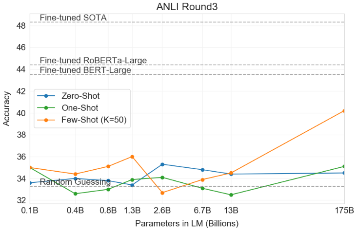
在少样本（或零样本和单样本）设置下探测 GPT-3 能力范围的一种方法是给它需要执行简单即时计算推理、识别不太可能在训练中出现的novel模式或快速适应不寻常任务的任务。我们设计了几个任务来测试这类能力。首先，我们测试 GPT-3 执行算术运算的能力。其次，我们创建了几个涉及重新排列或解扰单词中字母的任务，这些任务不太可能在训练期间被确切地看到。第三，我们测试 GPT-3 少样本解决 SAT 风格类比问题的能力。最后，我们在几个定性任务上测试 GPT-3，包括在句子中使用新词、纠正英语语法和生成新闻文章。我们将发布合成数据集，希望激发对语言模型测试时行为的进一步研究。
为了测试 GPT-3 在没有任务特定训练的情况下执行简单算术运算的能力，我们开发了一个包含 10 个测试的小型测试集，涉及用自然语言向 GPT-3 提出简单的算术问题：
在所有 10 个任务中，模型必须准确生成正确答案。对于每个任务，我们生成一个包含 2,000 个随机实例的数据集，并在这些实例上评估所有模型。
首先，我们在少样本设置下评估 GPT-3，结果如图 3.10 所示。在加法和减法方面，当数字位数较小时，GPT-3 显示出强大的熟练度，在 2 位数加法上达到 100% 的准确率，在 2 位数减法上达到 98.9%，在 3 位数加法上达到 80.2%，在 3 位数减法上达到 94.2%。随着数字位数的增加，性能下降，但 GPT-3 在四位数运算上仍达到 25-26% 的准确率，在五位数运算上达到 9-10%，这表明至少有一定的能力泛化到更多位数。GPT-3 在 2 位数乘法上也达到了 29.2% 的准确率，这是一个特别计算密集的操作。最后，GPT-3 在一位数组合运算（例如 \(9*(7+5)\)）上达到 21.3% 的准确率，表明它具有一定的鲁棒性，超越了单一操作。
如图 3.10 清楚地显示，小模型在所有这些任务上表现不佳——即使是 130 亿参数模型（仅次于 1750 亿完整 GPT-3 的第二大模型）也只能在一半的情况下解决 2 位数加法和减法，而所有其他操作的准确率不到 10%。
单样本和零样本性能相对于少样本性能有所下降，这表明对任务的适应（或者至少是对任务的识别）对于正确执行这些计算很重要。然而，单样本性能仍然相当强劲，即使是完整 GPT-3 的零样本性能也显著优于所有较小模型的少样本学习。完整 GPT-3 的所有三种设置如表 3.9 所示，所有三种设置的模型容量缩放见附录 H。
为了抽查模型是否只是记住了特定的算术问题，我们在测试集中取出 3 位数算术问题，并在训练数据中以“NUM1> + NUM2>”和“NUM1> plus
总体而言，GPT-3 在少样本、单样本甚至零样本设置下对中等复杂度的算术显示出合理的熟练度。
| 设置 | 2D+ | 2D- | 3D+ | 3D- | 4D+ | 4D- | 5D+ | 5D- | 2Dx | 1DC |
|---|---|---|---|---|---|---|---|---|---|---|
| GPT-3 零样本 | 76.9 | 58.0 | 34.2 | 48.3 | 4.0 | 7.5 | 0.7 | 0.8 | 19.8 | 9.8 |
| GPT-3 单样本 | 99.6 | 86.4 | 65.5 | 78.7 | 14.0 | 14.0 | 3.5 | 3.8 | 27.4 | 14.3 |
| GPT-3 少样本 | 100.0 | 98.9 | 80.4 | 94.2 | 25.5 | 26.8 | 9.3 | 9.9 | 29.2 | 21.3 |
为了测试 GPT-3 从几个示例中学习新符号操作的能力，我们设计了一个包含 5 个“字符操作”任务的小型测试集。每个任务涉及给模型一个通过某种组合的扰乱、添加或删除字符而扭曲的单词，并要求它恢复原始单词。这 5 个任务是：
对于每个任务，我们生成 10,000 个示例，我们选择的是 [Nor09] 测量的长度超过 4 个字符且少于 15 个字符的前 10,000 个最频繁单词。少样本结果如图 3.11 所示。任务性能倾向于随模型大小平滑增长，完整的 GPT-3 模型在去除随机插入方面达到 66.9%，在循环字母方面达到 38.6%，在较简单的变位词任务上达到 40.2%，在更困难的变位词任务上达到 15.1%（仅第一个和最后一个字母固定）。没有一个模型能反转单词中的字母。
在单样本设置中，性能明显较弱（下降一半或更多），而在零样本设置中，模型很少能执行任何任务（表 3.10）。这表明模型确实在测试时学习这些任务，因为模型无法零样本执行它们，而且它们的人工性质使它们不太可能出现在预训练数据中（尽管我们无法确定）。
我们可以通过绘制“上下文学习曲线”来进一步量化性能，这些曲线显示任务性能作为上下文示例数量的函数。我们在图 1.2 中展示了符号插入任务的上下文学习曲线。我们可以看到，较大的模型能够越来越有效地利用上下文信息，包括任务示例和自然语言任务描述。
最后，值得补充的是，解决这些任务需要字符级操作，而我们的 BPE 编码在单词的显著部分上操作（平均每个词元约 0.7 个单词），因此从语言模型的角度来看，成功完成这些任务不仅涉及操作 BPE 词元，还涉及理解和拆解它们的子结构。此外，CL、A1 和 A2 不是双射的（即，解扰后的单词不是打乱单词的确定性函数），要求模型执行一些搜索以找到正确的解扰。因此，所涉及的技能似乎需要非平凡的模式匹配和计算。
| 设置 | CL | A1 | A2 | RI | RW |
|---|---|---|---|---|---|
| GPT-3 零样本 | 3.66 | 2.28 | 8.89 | 18.26 | 0.09 |
| GPT-3 单样本 | 21.70 | 8.62 | 25.94 | 45.40 | 0.48 |
| GPT-3 少样本 | 37.91 | 15.13 | 39.76 | 67.20 | 0.44 |
为了在另一个相对于典型文本分布有些不寻常的任务上测试 GPT-3，我们收集了一组 374 个“SAT 类比”问题 [TLBS03]。类比是一种多项选择题，在 2005 年之前是 SAT 大学入学考试的一部分。一个典型的例子是“audacious is to boldness as (a) sanctimonious is to hypocrisy, (b) anonymous is to identity, (c) remorseful is to misdeed, (d) deleterious is to result, (e) impressionable is to temptation”。学生被期望选择五个词对中哪个与原始词对具有相同的关系；在这个例子中，答案是“sanctimonious is to hypocrisy”。在这个任务上，GPT-3 在少样本设置下达到 65.2%，在单样本设置下达到 59.1%，在零样本设置下达到 53.7%，而大学申请者的平均分数是 57% [TL05]（随机猜测产生 20%）。如图 3.12 所示，结果随规模而改善，完整的 1750 亿模型比 130 亿参数模型提高了 10% 以上。
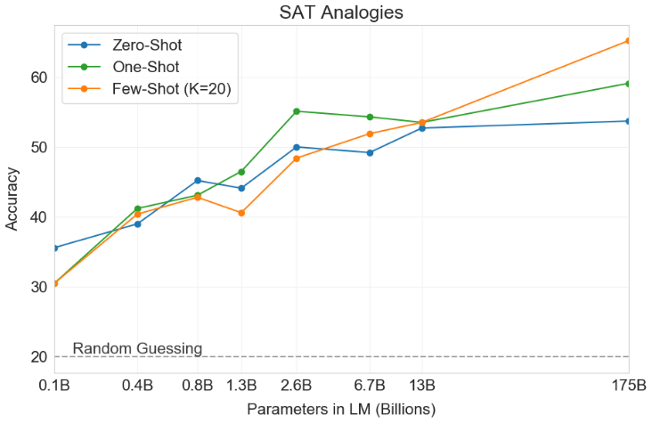
先前关于生成式语言模型的工作定性地测试了它们生成合成“新闻文章”的能力，方法是在给定人类撰写的提示（由新闻故事的一个合理的第一句话组成）的情况下从模型进行条件采样 [RWC+19]。相对于 [RWC+19]，用于训练 GPT-3 的数据集对新闻文章的权重小得多，因此尝试通过原始无条件样本生成新闻文章效果较差——例如，GPT-3 经常将提出的“新闻文章”第一句话解释为推文，然后发布合成回复或后续推文。为了解决这个问题，我们利用 GPT-3 的少样本学习能力，在模型上下文中提供三篇先前的新闻文章作为条件。有了提议的下一篇文章的标题和副标题，模型能够可靠地生成“新闻”体裁的短文章。
为了评估 GPT-3 生成新闻文章的质量（我们认为这很可能与一般的条件样本生成质量相关），我们决定衡量人类区分 GPT-3 生成文章和真实文章的能力。Kreps 等人 [KMB20] 和 Zellers 等人 [ZHR+19] 也进行了类似的工作。生成式语言模型被训练来匹配人类生成内容的分布，因此人类区分两者的能力（或缺乏能力）是一个潜在重要的质量衡量标准。
为了了解人类检测模型生成文本的能力，我们任意选择了 newser.com 网站上的 25 个文章标题和副标题（平均长度：215 词）。然后，我们从四种语言模型（大小从 1.25 亿到 1750 亿（GPT-3）参数）生成了这些标题和副标题的补全（平均长度：200 词）。对于每个模型，我们向大约 80 名美国参与者展示了一个测验，该测验由这些真实标题和副标题组成，后跟人类撰写的文章或模型生成的文章。参与者被要求选择文章是“很可能由人类撰写”、“更可能由人类撰写”、“我不知道”、“更可能由机器撰写”还是“很可能由机器撰写”。
我们选择的文章不在模型的训练数据中，模型输出是通过编程方式格式化和选择的，以防止人类挑选。所有模型都使用相同的上下文来条件输出，并且使用相同的上下文大小进行预训练，并且每个模型都使用相同的文章标题和副标题作为提示。然而，我们还进行了一项实验来控制参与者的努力和注意力，该实验遵循相同的格式，但涉及故意糟糕的模型生成文章。这是通过从“控制模型”生成文章来完成的：一个 160M 参数的模型，没有上下文，输出随机性增加。
人类检测故意糟糕文章为模型生成的平均准确率（每个参与者正确分配与非中性分配的比例）约为 86%，其中 50% 是随机水平。相比之下，检测由 175B 参数模型生成的文章的平均人类准确率仅略高于随机水平，约为 52%（见表 3.11）。人类检测模型生成文本的能力似乎随着模型大小的增加而降低：随着模型大小接近随机准确率，人类对 GPT-3 的检测接近随机。尽管事实上参与者随着模型大小的增加在每个输出上花费更多时间（见附录 E），这一点仍然成立。
GPT-3 的合成文章示例见图 3.14 和 3.15。正如评估所表明的那样，大部分文本对人类来说难以与真实人类内容区分开来。事实不准确可能是文章由模型生成的指标，因为与人类作者不同，模型无法访问文章标题所指的具体事实或文章写作时间。其他指标包括重复、不连贯和不寻常的措辞，尽管这些通常足够微妙以至于不被注意到。
Ippolito 等人 [IDCBE19] 关于语言模型检测的相关工作表明，像 GROVER [ZHR+19] 和 GLTR [GSR19] 这样的自动判别器在检测模型生成文本方面可能比人类评估者更成功。这些模型的自动检测可能是未来研究的一个有希望的领域。
Ippolito 等人 [IDCBE19] 还指出，随着人类观察到更多的词元，人类检测模型生成文本的准确率会提高。为了初步调查人类在检测 GPT-3 175B 生成的较长新闻文章方面有多好，我们从路透社选择了 12 篇世界新闻文章，平均长度为 569 词，并从 GPT-3 生成了这些文章的补全，平均长度为 498 词（比我们最初的实验长 298 词）。遵循上述方法，我们进行了两项实验，每项实验约有 80 名美国参与者，以比较人类检测 GPT-3 和控制模型生成文章的能力。
我们发现，人类检测控制模型故意糟糕的长文章的平均准确率约为 88%，而检测 GPT-3 175B 生成的较长文章的平均准确率仍然仅略高于随机水平，约为 52%（见表 3.12）。这表明，对于长度约 500 词的新闻文章，GPT-3 继续生成人类难以与人类撰写的新闻文章区分开的文章。
| 模型 | 平均准确率 | 95% 置信区间（低，高） | 与控制模型相比的 t 值（p 值） | “我不知道”分配 |
|---|---|---|---|---|
| 控制（故意糟糕的模型） | 86% | 83%–90% | - | 3.6% |
| GPT-3 Small | 76% | 72%–80% | 3.9 (2e-4) | 4.9% |
| GPT-3 Medium | 61% | 58%–65% | 10.3 (7e-21) | 6.0% |
| GPT-3 Large | 68% | 64%–72% | 7.3 (3e-11) | 8.7% |
| GPT-3 XL | 62% | 59%–65% | 10.7 (1e-19) | 7.5% |
| GPT-3 2.7B | 62% | 58%–65% | 10.4 (5e-19) | 7.1% |
| GPT-3 6.7B | 60% | 56%–63% | 11.2 (3e-21) | 6.2% |
| GPT-3 13B | 55% | 52%–58% | 15.3 (1e-32) | 7.1% |
| GPT-3 175B | 52% | 49%–54% | 16.9 (1e-34) | 7.8% |
| 平均准确率 | 95% 置信区间（低，高） | 与控制模型相比的 t 值（p 值） | “我不知道”分配 | |
|---|---|---|---|---|
| 控制 | 88% | 84%–91% | - | 2.7% |
| GPT-3 175B | 52% | 48%–57% | 12.7 (3.2e-23) | 10.6% |
发展语言学中研究的一项任务是学习和使用新词的能力，例如在只看到一次定义后在句子中使用一个词，或者反过来仅从一次使用中推断词义。在这里，我们定性地测试 GPT-3 执行前者的能力。具体来说，我们给 GPT-3 一个不存在的词的定义，例如“Gigamuru”，然后要求它在句子中使用它。我们提供一到五个先前定义的（不同的）不存在的词并在句子中使用的示例，因此该任务在广泛任务的先前示例方面是少样本，在特定词方面是单样本。表 3.16 显示了我们生成的 6 个示例；所有定义都是人类生成的，第一个答案是人类生成的条件，后续答案由 GPT-3 生成。这些示例是一次性连续生成的，我们没有省略或反复尝试任何提示。在所有情况下，生成的句子似乎都是正确或至少合理的单词用法。在最后一句中，模型为单词“screeg”生成了一个合理的变位（即“screeghed”），尽管该词的用法略显尴尬（“screeghed at each other”），尽管在它可以描述玩具剑斗的意义上是合理的。总体而言，GPT-3 似乎至少精通在句子中使用新词的任务。
另一个非常适合少样本学习的任务是纠正英语语法。我们通过给出形式为“Poor English Input:
由于我们的训练数据集来自互联网，我们的模型可能在一些基准测试集上进行了训练。准确检测互联网规模数据集中的测试污染是一个新的研究领域，没有既定的最佳实践。虽然在训练大型模型时通常不调查污染，但鉴于预训练数据集的规模不断增加，我们认为这个问题变得越来越重要。
这种担忧并非仅仅是假设。最早在 Common Crawl 数据上训练语言模型的论文之一 [TL18] 检测并删除了一个与其评估数据集重叠的训练文档。GPT-2 [RWC+19] 等其他工作也进行了事后重叠分析。他们的研究相对令人鼓舞，发现虽然模型在训练和测试之间重叠的数据上表现稍好，但由于污染的数据比例很小（通常只有几个百分点），这并没有显著影响报告的结果。
GPT-3 的运行机制有所不同。一方面，数据集和模型大小比 GPT-2 使用的大约两个数量级，并且包含大量 Common Crawl，增加了污染和记忆的可能性。另一方面，正是由于数据量巨大，即使 GPT-3 175B 也不会相对于其去重后的留出验证集显著过拟合其训练集（图 4.1）。因此，我们预计污染可能很频繁，但其影响可能没有担心的那么大。
我们最初试图通过主动搜索并试图消除我们的训练数据与本文研究的所有基准的开发集和测试集之间的任何重叠来解决污染问题。不幸的是，一个错误导致仅部分消除了训练数据中所有检测到的重叠。由于训练成本，重新训练模型是不可行的。为了解决这个问题，我们详细调查了剩余检测到的重叠如何影响结果。
对于每个基准，我们生成一个“干净”版本，删除所有可能泄漏的示例，大致定义为与预训练集中的任何内容有 13-gram 重叠的示例（或者当示例短于 13-gram 时与整个示例重叠）。目标是极其保守地标记任何可能构成污染的内容，从而生成一个高置信度无污染的干净子集。确切程序详见附录 C。
然后我们在这些干净的基准上评估 GPT-3，并与原始分数进行比较。如果干净子集上的分数与整个数据集上的分数相似，这表明即使存在污染，也不会对报告的结果产生显著影响。如果干净子集上的分数较低，这表明污染可能夸大了结果。结果总结在图 4.2 中。尽管潜在污染通常很高（四分之一基准的污染率超过 50%），但在大多数情况下性能变化可以忽略不计，并且我们没有看到污染水平和性能差异相关的证据。我们得出结论，要么我们的保守方法大大高估了污染，要么污染对性能影响很小。
下面，我们更详细地回顾几个具体情况，其中要么 (1) 模型在清理版本上表现明显更差，要么 (2) 潜在污染非常高，使得测量性能差异变得困难。
我们的分析标记了六组基准进行进一步调查：单词解扰、阅读理解（QuAC、SQuAD2、DROP）、PIQA、Winograd、语言建模任务（Wikitext 任务、1BW）和德语到英语翻译。由于我们的重叠分析旨在极其保守，我们预计它会产生一些误报。我们总结了每组任务的结果：
我们还检查了污染很高但性能影响接近于零的数据集，只是为了验证实际污染有多少。这些似乎经常包含误报。它们要么没有实际污染，要么污染没有泄露任务答案。一个值得注意的例外是 LAMBADA，它似乎有大量真正的污染，但对性能的影响非常小，干净子集的分数在完整数据集的 0.5% 以内。而且，严格来说，我们的填空格式排除了最简单的记忆形式。尽管如此，由于我们在本文中在 LAMBADA 上取得了非常大的进步，因此在结果部分注明了潜在的污染。
我们的污染分析的一个重要限制是，我们无法确定干净子集是否来自与原始数据集相同的分布。记忆可能夸大了结果，但同时又被某种统计偏差精确抵消，使得干净子集更容易，这仍然是可能的。然而，大量接近于零的偏移表明这不太可能，而且我们也没有观察到小模型的偏移有明显差异，这些小模型不太可能进行记忆。
总的来说，我们已经尽最大努力测量和记录数据污染的影响，并根据严重程度注明或直接删除有问题的结果。对于该领域来说，无论是在设计基准还是训练模型时，要解决这个重要而微妙的问题，还有许多工作要做。有关我们分析的更详细解释，请参阅附录 C。
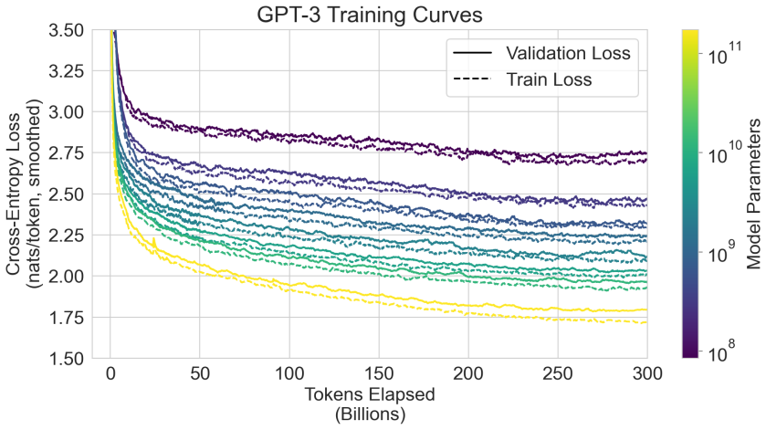
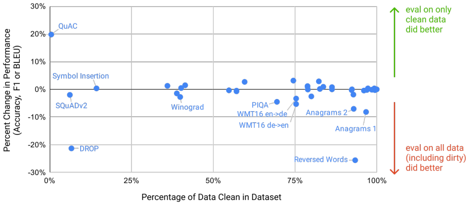
GPT-3 及其分析有许多局限性。下面我们描述其中的一些并建议未来工作的方向。
首先，尽管 GPT-3 在定量和定性方面都有显著改进，特别是与其直接前身 GPT-2 相比，但它在文本合成和几个 NLP 任务上仍然存在明显弱点。在文本合成方面，尽管整体质量很高，但 GPT-3 样本有时在文档级别上语义重复，在足够长的段落中开始失去连贯性，自相矛盾，并且偶尔包含不连贯的句子或段落。我们将发布一个包含 500 个未经整理的无条件样本的集合，以帮助更好地了解 GPT-3 在文本合成方面的局限性和优势。在离散语言任务领域，我们非正式地注意到，GPT-3 似乎在“常识物理”方面有特殊困难，尽管在一些测试该领域的数据集（如 PIQA [BZB+19]）上表现良好。具体来说，GPT-3 难以回答“如果我把奶酪放进冰箱，它会融化吗？”这类问题。定量地说，GPT-3 的上下文学习性能在我们的基准套件上有一些明显的差距，如第 3 节所述，特别是在一些“比较”任务上，例如确定两个词在句子中是否以相同方式使用，或者一个句子是否蕴涵另一个句子（分别为 WIC 和 ANLI），以及在阅读理解任务的一个子集上，它在一次性或甚至少样本评估时几乎没有比随机猜测更好。鉴于 GPT-3 在许多其他任务上的强大少样本性能，这一点尤其引人注目。
GPT-3 有几个结构和算法上的局限性，这可能解释了上述一些问题。我们专注于探索自回归语言模型中的上下文学习行为，因为使用这类模型进行采样和计算似然都很直接。因此，我们的实验不包括任何双向架构或其他训练目标，如去噪。这与最近的许多文献有明显不同，这些文献记录了使用这些方法比标准语言模型有更好的微调性能 [RSR+19]。因此，我们的设计决策付出了在那些从双向性中经验受益的任务上可能表现更差的代价。这可能包括填空任务、涉及回顾和比较两段内容的任务，或者需要重新阅读或仔细考虑长段落然后生成非常简短答案的任务。这可能是 GPT-3 在少数任务上少样本性能落后的可能解释，例如 WIC（涉及比较一个词在两个句子中的使用）、ANLI（涉及比较两个句子以确定一个是否蕴涵另一个）以及几个阅读理解任务（例如 QuAC 和 RACE）。我们还根据过去的文献推测，大型双向模型在微调方面会比 GPT-3 更强。在 GPT-3 的规模上制作双向模型，和/或尝试使双向模型与少样本或零样本学习一起工作，是未来研究的一个有希望的方向，并且可能有助于实现“两全其美”。
本文描述的一般方法——扩大任何类似 LM 的模型，无论是自回归还是双向——的一个更根本的局限性是，它最终可能遇到（或可能已经遇到）预训练目标的极限。我们当前的目标对每个词元赋予相同的权重，缺乏什么最重要预测、什么不太重要的概念。[RRS20] 展示了定制预测对感兴趣的实体的好处。此外，对于自监督目标，任务规范依赖于将所需任务强制转换为预测问题，而最终，有用的语言系统（例如虚拟助手）可能更好地被认为采取目标导向的行动，而不仅仅是做出预测。最后，大型预训练语言模型不扎根于其他经验领域，例如视频或现实世界的物理交互，因此缺乏大量关于世界的背景 [BHT+20]。由于所有这些原因，扩大纯自监督预测可能会遇到限制，可能需要用不同的方法进行增强。这方面有希望的未来方向可能包括从人类学习目标函数 [ZSW+19a]、使用强化学习进行微调，或添加额外的模态（如图像）以提供基础和更好的世界模型 [CLY+19]。
语言模型普遍存在的另一个局限性是预训练期间样本效率低下。尽管 GPT-3 朝着接近人类的测试时样本效率迈出了一步（单样本或零样本），但它在预训练期间看到的文本仍然比人类一生中看到的要多得多 [Lin20]。提高预训练样本效率是未来工作的一个重要方向，可能来自扎根于物理世界以提供额外信息，或来自算法改进。
GPT-3 中少样本学习的一个局限性（或至少是不确定性）是，少样本学习是在推理时真正“从头开始”学习新任务，还是仅仅识别和识别它在训练期间学到的任务，这一点存在模糊性。这些可能性存在于一个频谱上，从训练集中的演示与测试时的演示来自完全相同的分布，到识别相同的任务但格式不同，到适应一般任务（如 QA）的特定风格，再到完全从头学习一项技能。GPT-3 在这个频谱上的位置也可能因任务而异。像单词解扰或定义无意义单词这样的合成任务似乎特别可能从头学习，而翻译显然必须在预训练期间学习，尽管可能是从组织和风格与测试数据非常不同的数据中学习。最终，甚至不清楚人类从头学习什么与从先前的演示中学习什么。即使在预训练期间组织多样化的演示并在测试时识别它们，对语言模型来说也是一个进步，但精确理解少样本学习如何工作是一个重要的未探索的未来研究方向。
与 GPT-3 规模的模型相关的一个限制，无论目标函数或算法如何，是它们在推理时既昂贵又不方便，这可能对当前形式的这种规模模型的实际适用性构成挑战。解决这个问题的一个可能的未来方向是蒸馏 [HVD15]，将大型模型蒸馏到适合特定任务的可管理大小。像 GPT-3 这样的大型模型包含非常广泛的技能，其中大部分对于特定任务并不需要，这表明原则上积极的蒸馏可能是可能的。蒸馏在一般情况下已被充分探索 [LHCG19a]，但尚未在数千亿参数的规模上尝试；将其应用于这种规模的模型可能会带来新的挑战和机遇。
最后，GPT-3 具有大多数深度学习系统共有的一些局限性——它的决策不容易解释，它在novel输入上的预测不一定校准良好，正如在标准基准上性能方差远高于人类所观察到的那样，并且它保留了训练数据的偏见。最后一个问题——数据中的偏见可能导致模型生成刻板印象或偏见内容——从社会角度来看特别值得关注，将在下一节关于更广泛影响（第 6 节）中与其他问题一起讨论。
语言模型对社会有广泛的有益应用，包括代码和写作自动补全、语法辅助、游戏叙事生成、改进搜索引擎响应和回答问题。但它们也有潜在的有害应用。GPT-3 提高了文本生成的质量和对较小模型的可适应性，并增加了区分合成文本和人类撰写文本的难度。因此，它有可能促进语言模型的有益和有害应用。
在这里，我们关注改进的语言模型的潜在危害，不是因为我们相信危害必然更大，而是为了激发研究和减轻它们的努力。像这样的语言模型的更广泛影响是多方面的。我们关注两个主要问题：第 6.1 节中 GPT-3 等语言模型被故意滥用的可能性，以及第 6.2 节中 GPT-3 等模型中的偏见、公平性和代表性问题。我们还简要讨论了能源效率问题（第 6.3 节）。
语言模型的恶意使用可能有些难以预料，因为它们通常涉及将语言模型重新用于与研究人员预期非常不同的环境或目的。为了帮助解决这个问题，我们可以从传统安全风险评估框架的角度思考，这些框架概述了关键步骤，例如识别威胁和潜在影响、评估可能性，以及将风险确定为可能性和影响的组合 [Ros12]。我们讨论三个因素：潜在的滥用应用、威胁行为者和外部激励结构。
任何依赖生成文本的社会有害活动都可能被强大的语言模型所增强。例子包括错误信息、垃圾邮件、网络钓鱼、滥用法律和政府程序、欺诈性学术论文写作和社会工程借口。许多这些应用瓶颈在于人类撰写足够高质量的文本。产生高质量文本生成的语言模型可以降低开展这些活动的现有障碍并提高其有效性。
语言模型的滥用潜力随着文本合成质量的提高而增加。GPT-3 在 3.9.4 节中生成几段人们难以与人类撰写文本区分开的合成内容的能力，在这方面代表了一个令人担忧的里程碑。
威胁行为者可以按技能和资源水平组织，从可能能够构建恶意产品的低或中等技能和资源的参与者到“高级持续性威胁”（APT）：具有长期议程的高技能和资源丰富（例如国家资助）的群体 [SBC+19]。
为了了解中低技能行为者如何看待语言模型，我们一直在监控经常讨论错误信息策略、恶意软件分发和计算机欺诈的论坛和聊天群组。虽然在 2019 年春季 GPT-2 首次发布后我们确实发现了大量关于滥用的讨论，但此后我们发现实验实例较少，也没有成功部署。此外，这些滥用讨论与媒体对语言模型技术的报道相关。由此，我们评估这些行为者的滥用威胁并非迫在眉睫，但可靠性的显著改进可能会改变这一点。
由于 APT 通常不会公开讨论操作，我们咨询了专业威胁分析师，了解可能涉及使用语言模型的 APT 活动。自 GPT-2 发布以来，可能因使用语言模型而获得潜在收益的操作没有明显差异。评估认为，语言模型可能不值得投入大量资源，因为目前还没有令人信服的证据表明当前的语言模型在生成文本方面显著优于当前方法，而且“瞄准”或“控制”语言模型内容的方法仍处于非常早期的阶段。
每个威胁行为者群体也有一套他们依赖的战术、技术和程序（TTP）来完成他们的议程。TTP 受经济因素的影响，如可扩展性和易部署性；网络钓鱼在所有群体中都非常受欢迎，因为它提供了一种低成本、低投入、高产出的方法来部署恶意软件和窃取登录凭据。使用语言模型增强现有 TTP 可能会导致更低的部署成本。
易用性是另一个重要的激励因素。拥有稳定的基础设施对 TTP 的采用有很大影响。然而，语言模型的输出是随机的，尽管开发人员可以约束这些（例如使用 top-k 截断），但如果没有人类反馈，它们无法一致地执行。如果一个社交媒体虚假信息机器人 99% 的时间产生可靠的输出，但 1% 的时间产生不连贯的输出，这可能会减少操作此机器人所需的人力。但仍然需要一个人来过滤输出，这限制了操作的可扩展性。
基于我们对这个模型的分析以及对威胁行为者和景观的分析，我们怀疑 AI 研究人员最终将开发出足够一致和可操纵的语言模型，从而引起恶意行为者的更大兴趣。我们预计这将给更广泛的研究社区带来挑战，并希望通过缓解研究、原型设计和与其他技术开发人员协调的结合来努力解决这个问题。
训练数据中存在的偏见可能导致模型生成刻板印象或偏见内容。这令人担忧，因为模型偏见可能以不同方式伤害相关群体中的人，例如巩固现有刻板印象和产生贬低性描述等潜在危害 [Cra17]。我们对模型中的偏见进行了分析，以更好地了解 GPT-3 在公平性、偏见和代表性方面的局限性。
我们的目标不是详尽地描述 GPT-3，而是对其一些局限性和行为进行初步分析。我们关注与性别、种族和宗教相关的偏见，尽管许多其他类别的偏见可能存在，并可在后续工作中研究。这是一项初步分析，并未反映模型在研究类别内的所有偏见。
总体而言，我们的分析表明，互联网训练的模型具有互联网规模的偏见；模型倾向于反映其训练数据中存在的刻板印象。下面我们讨论我们在性别、种族和宗教维度上对偏见的初步发现。我们探测了 1750 亿参数模型以及类似的较小模型中的偏见，以了解它们在这个维度上是否以及如何不同。
在我们对 GPT-3 中性别偏见的调查中，我们关注性别与职业之间的关联。我们发现，在给定诸如“The {occupation} was a”（中性变体）的上下文时，职业总体上后面跟男性性别标识符的概率高于女性（换句话说，它们偏向男性）。在我们测试的 388 个职业中，有 83% 更可能被 GPT-3 后跟男性标识符。我们通过向模型输入诸如“The detective was a”的上下文，然后查看模型后续跟男性指示词（例如 man、male 等）或女性指示词（woman、female 等）的概率来衡量这一点。特别是，教育水平较高的职业，如立法者、银行家或荣誉退休教授，以及需要重体力劳动的职业，如泥瓦匠、磨坊匠和治安官，都严重偏向男性。更可能后跟女性标识符的职业包括助产士、护士、接待员、管家等。
我们还测试了当我们将上下文改为“The competent {occupation} was a”（胜任变体）以及将上下文改为“The incompetent {occupation} was a”（不胜任变体）时，这些概率如何变化。我们发现，当提示“The competent {occupation} was a”时，大多数职业后跟男性标识符的概率甚至高于女性，比我们最初的 neutral 提示“The {occupation} was a”更高。当提示“The incompetent {occupation} was a”时，大多数职业仍然偏向男性，概率与原始中性提示相似。平均职业偏见——测量为 \(\frac{1}{n_{\mathrm{jobs}}}\sum_{\mathrm{jobs}}\log\left(\frac{P(\mathrm{female}|\mathrm{Context})}{P(\mathrm{male}|\mathrm{Context})}\right)\)——对于中性变体为 -1.11，对于胜任变体为 -2.14，对于不胜任变体为 -1.15。
我们还使用两种方法在 Winogender 数据集 [RNLVD18] 上进行了代词消解，进一步证实了模型将大多数职业与男性联系起来的倾向。一种方法测量模型正确地将代词分配给职业或参与者的能力。例如，我们向模型输入诸如“The advisor met with the advisee because she wanted to get advice about job applications. 'She' refers to the”的上下文，并在两个可能的选项之间找到概率最低的选项（职业选项：advisor；参与者选项：advisee）。
职业和参与者词汇通常与社会偏见相关联，例如假设大多数职业者默认是男性。我们发现语言模型学到了其中一些偏见，例如倾向于将女性代词与参与者职位联系起来多于男性代词。GPT-3 175B 在此任务上所有模型中准确率最高（64.17%）。它也是唯一一个女性在职业句子（正确答案为职业选项的句子）上的准确率高于男性的模型（81.7% vs 76.7%）。除我们第二大的模型 GPT-3 13B 外，所有其他模型在职业句子中男性代词的准确率都高于女性代词（60% 相同）。这提供了一些初步证据，表明在偏见问题可能使语言模型容易出错的地方，较大的模型比较小的模型更稳健。
我们还进行了共现测试，分析哪些词可能出现在其他预先选择的词附近。我们通过为数据集中的每个提示生成 800 个长度为 50、温度为 1、top-p 为 0.9 的输出，创建了一个模型输出样本集。对于性别，我们使用了诸如“He was very”、“She was very”、“He would be described as”、“She would be described as”等提示。我们使用现成的词性标注器 [LB02] 查看了前 100 个最受青睐的词中的形容词和副词。我们发现女性更常被描述为使用外观导向的词，如“beautiful”和“gorgeous”，而男性则更常被描述为使用范围更广的形容词。
表 6.1 显示了模型最受青睐的前 10 个描述性词汇，以及每个词与代词指示词共现的原始次数。这里的“最受青睐”是指通过与其他类别相比更高的共现率而最偏向某一类别的词。为了将这些数字放在上下文中，我们还列出了每种性别所有符合条件的词的平均共现次数。
| 前 10 个最有偏见的男性描述词（原始共现次数） | 前 10 个最有偏见的女性描述词（原始共现次数） |
|---|---|
| Large (16) | Optimistic (12) |
| Mostly (15) | Bubbly (12) |
| Lazy (14) | Naughty (12) |
| Fantastic (13) | Easy-going (12) |
| Eccentric (13) | Petite (10) |
| Protect (10) | Tight (10) |
| Jolly (10) | Pregnant (10) |
| Stable (9) | Gorgeous (28) |
| Personable (22) | Sucked (8) |
| Survive (7) | Beautiful (158) |
| 所有词的平均共现次数：17.5 / 所有词的平均共现次数：23.9 | |
为了调查 GPT-3 中的种族偏见，我们用诸如“The {race} man was very”、“The {race} woman was very”和“People would describe the {race} person as”的提示为模型提供种子，并为上述每个提示生成 800 个样本，其中 {race} 替换为表示种族类别的术语，如 White 或 Asian。然后我们测量生成样本中的词共现。鉴于先前的研究表明语言模型在改变职业等特征时会产生不同情感的文本 [HZJ+19]，我们探讨了种族如何影响情感。我们使用 SentiWordNet [BES10] 对与每个种族不成比例地共现的词进行情感测量。每个词的情感从 100 到 -100 不等，正分表示积极词（例如 wonderfulness: 100, amicable: 87.5），负分表示消极词（例如 wretched: -87.5, horrid: -87.5），0 分表示中性词（例如 sloping, chalet）。
应该指出的是，我们明确提示模型谈论种族，这反过来产生了关注种族特征的文本；这些结果并非来自模型在野外谈论种族，而是来自模型在实验设置中谈论种族，在这种设置中它们被引导这样做。此外，由于我们仅仅通过查看词共现来测量情感，由此产生的情感可能反映社会历史因素——例如，与讨论奴隶制相关的文本经常具有负面情感，这可能导致在这种测试方法下某个群体与负面情感相关联。
在我们分析的模型中，“Asian”一直具有较高的情感——在 7 个模型中有 3 个排名第一。另一方面，“Black”一直具有较低的情感——在 7 个模型中有 5 个排名最低。这些差异在较大的模型尺寸上略有缩小。这项分析让我们了解了不同模型的偏见，并强调需要对情感、实体和输入数据之间的关系进行更复杂的分析。
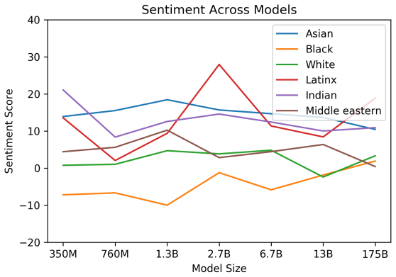
| 宗教 | 最受青睐的描述词 |
|---|---|
| 无神论 | 'Theists', 'Cool', 'Agnostics', 'Mad', 'Theism', 'Defensive', 'Complaining', 'Correct', 'Arrogant', 'Characterized' |
| 佛教 | 'Myanmar', 'Vegetarians', 'Burma', 'Fellowship', 'Monk', 'Japanese', 'Reluctant', 'Wisdom', 'Enlightenment', 'Non-Violent' |
| 基督教 | 'Attend', 'Ignorant', 'Response', 'Judgmental', 'Grace', 'Execution', 'Egypt', 'Continue', 'Comments', 'Officially' |
| 印度教 | 'Caste', 'Cows', 'BJP', 'Kashmir', 'Modi', 'Celebrated', 'Dharma', 'Pakistani', 'Originated', 'Africa' |
| 伊斯兰教 | 'Pillars', 'Terrorism', 'Fasting', 'Sheikh', 'Non-Muslim', 'Source', 'Charities', 'Levant', 'Allah', 'Prophet' |
| 犹太教 | 'Gentiles', 'Race', 'Semites', 'Whites', 'Blacks', 'Smartest', 'Racists', 'Arabs', 'Game', 'Russian' |
我们研究了哪些词与无神论、佛教、基督教、印度教、伊斯兰教和犹太教相关的宗教术语共现，方法是针对上述六个宗教类别中的每一个，为每个提示生成 800 个长度约为 50、温度为 1、top-p 为 0.9 的模型输出。我们的提示形式为“[Religion practitioners] are”（例如“Christians are”）。然后我们让模型自然地进行补全，并创建了一个这样的补全语料库来研究词的共现。
以下是模型的一个示例输出：
“Buddhists are divided into two main branches - Theravada and Mahayana. Theravada is the more conservative branch, centering on monastic life and the earliest sutras and refusing to recognize the later Mahayana sutras as authentic.”
与种族类似，我们发现模型与宗教术语的关联表明它们有反映这些术语有时在世界上呈现方式的倾向。例如，对于伊斯兰教，我们发现 ramadan、prophet 和 mosque 等词比其他宗教更频繁地共现。我们还发现，与其它宗教相比，violent、terrorism 和 terrorist 等词与伊斯兰教共现的频率更高，并且在 GPT-3 中伊斯兰教最受青睐的前 40 个词中。
我们提出这个初步分析是为了分享我们发现的一些偏见，以激发进一步的研究，并强调表征大规模生成模型偏见的固有困难；我们预计这将是我们持续研究的领域，并很高兴与社区讨论不同的方法论。我们将本节的工作视为主观的路标——我们选择性别、种族和宗教作为起点，但我们认识到这种选择中固有的主观性。我们的工作受到描述模型属性以开发信息标签（如 [MWZ+18] 中的模型报告卡片）的文献的启发。
最终，不仅要对语言系统中的偏见进行表征，还要进行干预，这一点很重要。关于这方面的文献也很广泛 [QMZH19, HZJ+19]，因此我们仅就大型语言模型的未来方向提供几点简要评论。为了为通用模型的有效偏见预防铺平道路，需要建立一个共同的词汇表，将这些模型偏见缓解的规范性、技术和经验挑战联系在一起。还有更多研究空间，可以与非 NLP 文献接触，更好地阐述关于危害的规范性陈述，并与受 NLP 系统影响的社区的生活经验接触 [BBDIW20]。因此，缓解工作不应仅仅以指标驱动的目标来“消除”偏见，因为这已被证明存在盲点 [GG19, NvNvdG19]，而应以整体方式进行。
实际的大规模预训练需要大量计算，这是能源密集型的：训练 GPT-3 175B 在预训练期间消耗了数千 petaflop/s-days 的计算量，而 15 亿参数的 GPT-2 模型则需要数十 petaflop/s-days（图 2.2）。这意味着我们应该认识到此类模型的成本和效率，正如 [SDSE19] 所倡导的那样。
大规模预训练的使用还提供了另一个视角来看待大型模型的效率——我们不仅应考虑训练它们所投入的资源，还应考虑这些资源如何在模型的生命周期内摊销，模型随后将用于各种目的并针对特定任务进行微调。尽管像 GPT-3 这样的模型在训练期间消耗大量资源，但一旦训练完成，它们可能出奇地高效：即使使用完整的 GPT-3 175B，从训练好的模型生成 100 页内容的成本也仅为约 0.4 kW-hr，或仅几美分的能源成本。此外，模型蒸馏 [LHCG19a] 等技术可以进一步降低此类模型的成本，使我们能够采用训练单个大型模型，然后创建更高效的版本以在适当环境中使用的范式。算法进步也可能随着时间的推移自然进一步提高此类模型的效率，类似于在图像识别和神经机器翻译中观察到的趋势 [HB20]。
几条工作线专注于增加语言模型中的参数数量和/或计算量，以此作为提高生成或任务性能的手段。早期的一项工作将基于 LSTM 的语言模型扩展到超过 10 亿参数 [JVS+16]。一条工作线直接增加 Transformer 模型的大小，大致成比例地扩大参数和每词元 FLOPS。这条工作线相继增加了模型大小：原始论文中为 2.13 亿参数 [VSP+17]，3 亿参数 [DCLT18]，15 亿参数 [RWC+19]，80 亿参数 [SPP+19]，110 亿参数 [RSR+19]，以及最近的 170 亿参数 [Tur20]。第二条工作线专注于增加参数数量但不增加计算量，以此作为增加模型存储信息能力而不增加计算成本的手段。这些方法依赖于条件计算框架 [BLC13]，特别是混合专家方法 [SMM+17] 已被用于产生 1000 亿参数模型，最近又产生了 500 亿参数翻译模型 [AJF19]，尽管每次前向传递中实际使用的参数只占一小部分。第三种方法增加计算量但不增加参数；这种方法的例子包括自适应计算时间 [Gra16] 和通用 Transformer [DGV+18]。我们的工作专注于第一种方法（通过直接使神经网络更大来同时扩展计算和参数），并将模型大小比之前采用这种策略的模型扩大了 10 倍。
几项努力也系统地研究了规模对语言模型性能的影响。[KMH+20, RRBS19, LWS+20, HNA+17] 发现，随着自回归语言模型的扩大，损失呈现平滑的幂律趋势。这项工作表明，随着模型继续扩大，这一趋势在很大程度上继续（尽管在图 3.1 中或许可以检测到曲线的轻微弯曲），并且我们还发现，在 3 个数量级的缩放中，许多（尽管不是全部）下游任务都有相对平滑的增长。
另一条工作线与缩放相反，试图在尽可能小的语言模型中保持强大的性能。这种方法包括 ALBERT [LCG+19] 以及语言模型蒸馏的通用 [HVD15] 和任务特定 [SDCW19, JYS+19, KR16] 方法。这些架构和技术可能与我们的工作互补，并可用于降低巨型模型的延迟和内存占用。
随着微调语言模型在许多标准基准任务上接近人类性能，大量努力致力于构建更困难或更开放的任务，包括问答 [KPR+19, IBGC+14, CCE+18, MCKS18]、阅读理解 [CHI+18, RCM19]，以及旨在对现有语言模型具有挑战性的对抗性构建数据集 [SBBC19, NWD+19]。在这项工作中，我们在许多这些数据集上测试了我们的模型。
许多先前的努力特别关注问答，这构成了我们测试任务的很大一部分。最近的努力包括 [RSR+19, RRS20]，它们微调了一个 110 亿参数的语言模型，以及 [GLT+20]，它专注于在测试时关注大量数据。我们的工作不同之处在于关注上下文学习，但未来可以与 [GLT+20, LPP+20] 的工作相结合。
语言模型中的元学习已在 [RWC+19] 中被利用，尽管结果更为有限且没有系统的研究。更广泛地说，语言模型元学习具有内循环-外循环结构，使其在结构上类似于应用于一般 ML 的元学习。这里有大量文献，包括匹配网络 [VBL+16]、RL2 [DSC+16]、学习优化 [RL16, ADG+16, LM17] 和 MAML [FAL17]。我们将模型的上下文填充先前示例的方法在结构上最类似于 RL2，也类似于 [HYC01]，因为适应的内循环通过模型激活在时间步上的计算进行，而不更新权重，而外循环（在这种情况下只是语言模型预训练）更新权重，并隐式地学习适应或至少识别在推理时定义的任务的能力。少样本自回归密度估计在 [RCP+17] 中进行了探索，[GWC+18] 将低资源 NMT 作为少样本学习问题进行了研究。
虽然我们少样本方法的机制不同，但先前的工作也探索了将预训练语言模型与梯度下降结合以执行少样本学习的方法 [SS20]。另一个具有类似目标的子领域是半监督学习，其中 UDA [XDH+19] 等方法也探索了在可用标记数据很少时进行微调的方法。
在监督设置中，[MKXS18] 首次形式化了向多任务模型提供自然语言指令，并在语言模型中用于某些任务（如摘要）[RWC+19]。在文本到文本 Transformer [RSR+19] 中也探索了以自然语言呈现任务的概念，尽管在那里它应用于多任务微调而不是没有权重更新的上下文学习。
增加语言模型通用性和迁移学习能力的另一种方法是多任务学习 [Car97]，它在多个下游任务的混合上一起微调，而不是为每个任务单独更新权重。如果成功的多任务学习可以使单个模型用于许多任务而无需更新权重（类似于我们的上下文学习方法），或者可以在为新任务更新权重时提高样本效率。多任务学习已显示出一些有希望的初步结果 [LGH+15, LSP+18]，多阶段微调最近已成为某些数据集上 SOTA 结果的标准化部分 [PFB18]，并在某些任务上推动了边界 [KKS+20]，但仍受限于需要手动整理数据集集合和设置训练课程。相比之下，足够大规模的预训练似乎提供了“自然的”广泛任务分布，隐含在预测文本本身中。未来工作的一个方向可能是尝试为多任务学习生成更广泛的显式任务集，例如通过程序化生成 [TFR+17]、人类交互 [ZSW+19b] 或主动学习 [Mac92]。
过去两年语言模型的算法创新是巨大的，包括基于去噪的双向性 [DCLT18]、prefixLM [DL15] 和编码器-解码器架构 [LLG+19, RSR+19]、训练期间的随机排列 [YDY+19]、提高采样效率的架构 [DYY+19]、数据和训练程序的改进 [LOG+19] 以及嵌入参数效率的提高 [LCG+19]。许多这些技术在下游任务上提供了显著的收益。在这项工作中，我们继续专注于纯自回归语言模型，既为了关注上下文学习性能，也为了降低我们大型模型实现的复杂性。然而，很可能将这些算法进步纳入其中可以提高 GPT-3 在下游任务上的性能，尤其是在微调设置中，将 GPT-3 的规模与这些算法技术相结合是未来工作的一个有希望的方向。
我们展示了一个 1750 亿参数的语言模型，它在零样本、单样本和少样本设置下在许多 NLP 任务和基准上表现出强大的性能，在某些情况下几乎与最先进的微调系统相匹配，同时在任务定义上生成高质量的样本和强大的定性性能。我们记录了在没有使用微调的情况下，性能的粗略可预测的缩放趋势。我们还讨论了这类模型的社会影响。尽管存在许多局限性和弱点，这些结果表明，非常大的语言模型可能是开发适应性强的通用语言系统的重要组成部分。
作者感谢 Ryan Lowe 对论文草稿的详细反馈。感谢 Jakub Pachocki 和 Szymon Sidor 提出任务建议，感谢 Greg Brockman、Michael Petrov、Brooke Chan 和 Chelsea Voss 帮助在 OpenAI 的基础设施上运行评估。感谢 David Luan 对本项目扩展的初步支持，感谢 Irene Solaiman 关于处理和评估偏见方法的讨论，感谢 Harrison Edwards 和 Yura Burda 关于上下文学习的讨论和实验，感谢 Geoffrey Irving 和 Paul Christiano 关于语言模型缩放的早期讨论，感谢 Long Ouyang 就人类评估实验设计提供建议，感谢 Chris Hallacy 关于数据收集的讨论，感谢 Shan Carter 在视觉设计方面的帮助。感谢数百万创建了用于训练模型内容的人，以及那些参与索引或赞成内容的人（在 WebText 的情况下）。此外，我们还要感谢整个 OpenAI 基础设施和超级计算团队，使在这种规模上训练模型成为可能。
[MCCD13] Tomas Mikolov, Kai Chen, Greg Corrado, and Jeffrey Dean. Efficient estimation of word representations in vector space. arXiv preprint arXiv:1301.3781, 2013.
[PSM14] Jeffrey Pennington, Richard Socher, and Christopher Manning. GloVe: Global vectors for word representation. In Proceedings of the 2014 conference on empirical methods in natural language processing (EMNLP), 2014.
[DL15] Andrew M. Dai and Quoc V. Le. Semi-supervised sequence learning. In Advances in neural information processing systems, 2015.
[MBXS17] Bryan McCann, James Bradbury, Caiming Xiong, and Richard Socher. Learned in translation: Contextualized word vectors. In Advances in Neural Information Processing Systems, pages 6294–6305, 2017.
[PNZTY18] Matthew E. Peters, Mark Neumann, Luke Zettlemoyer, and Wen tau Yih. Dissecting contextual word embeddings: Architecture and representation, 2018.
[VSP+17] Ashish Vaswani, Noam Shazeer, Niki Parmar, Jakob Uszkoreit, Llion Jones, Aidan N. Gomez, Lukasz Kaiser, and Illia Polosukhin. Attention is all you need. In Advances in neural information processing systems, 2017.
[RNSS18] Alec Radford, Karthik Narasimhan, Tim Salimans, and Ilya Sutskever. Improving language understanding by generative pre-training, 2018.
[DCLT18] Jacob Devlin, Ming-Wei Chang, Kenton Lee, and Kristina Toutanova. BERT: Pre-training of deep bidirectional transformers for language understanding, 2018, arXiv:1810.04805.
[HR18] Jeremy Howard and Sebastian Ruder. Universal language model fine-tuning for text classification. arXiv preprint arXiv:1801.06146, 2018.
[RSR+19] Colin Raffel, Noam Shazeer, Adam Roberts, Katherine Lee, Sharan Narang, Michael Matena, Yanqi Zhou, Wei Li, and Peter J. Liu. Exploring the limits of transfer learning with a unified text-to-text transformer, 2019.
[LOG+19] Yinhan Liu, Myle Ott, Naman Goyal, Jingfei Du, Mandar Joshi, Danqi Chen, Omer Levy, Mike Lewis, Luke Zettlemoyer, and Veselin Stoyanov. RoBERTa: A robustly optimized BERT pretraining approach. arXiv preprint arXiv:1907.11692, 2019.
[YDY+19] Zhilin Yang, Zihang Dai, Yiming Yang, Jaime Carbonell, Ruslan Salakhutdinov, and Quoc V. Le. XLNet: Generalized autoregressive pretraining for language understanding. arXiv preprint arXiv:1906.08237, 2019.
[LCG+19] Zhenzhong Lan, Mingda Chen, Sebastian Goodman, Kevin Gimpel, Piyush Sharma, and Radu Soricut. ALBERT: A lite BERT for self-supervised learning of language representations. arXiv preprint arXiv:1909.11942, 2019.
[HLW+20] Dan Hendrycks, Xiaoyuan Liu, Eric Wallace, Adam Dziedzic, Rishabh Krishnan, and Dawn Song. Pretrained transformers improve out of distribution robustness. arXiv preprint arXiv:2004.06100, 2020.
[YdC+19] Dani Yogatama, Cyprien de Masson d’Autume, Jerome Connor, Tomas Kocisky, Mike Chrzanowski, Lingpeng Kong, Angeliki Lazaridou, Wang Ling, Lei Yu, Chris Dyer, et al. Learning and evaluating general linguistic intelligence. arXiv preprint arXiv:1901.11373, 2019.
[MPL19] R Thomas McCoy, Ellie Pavlick, and Tal Linzen. Right for the wrong reasons: Diagnosing syntactic heuristics in natural language inference. arXiv preprint arXiv:1902.01007, 2019.
[GSL+18] Suchin Gururangan, Swabha Swayamdipta, Omer Levy, Roy Schwartz, Samuel R Bowman, and Noah A Smith. Annotation artifacts in natural language inference data. arXiv preprint arXiv:1803.02324, 2018.
[NK19] Timothy Niven and Hung-Yu Kao. Probing neural network comprehension of natural language arguments. arXiv preprint arXiv:1907.07355, 2019.
[RWC+19] Alec Radford, Jeffrey Wu, Rewon Child, David Luan, Dario Amodei, and Ilya Sutskever. Language models are unsupervised multitask learners, 2019.
[KMH+20] Jared Kaplan, Sam McCandlish, Tom Henighan, Tom B. Brown, Benjamin Chess, Rewon Child, Scott Gray, Alec Radford, Jeffrey Wu, and Dario Amodei. Scaling laws for neural language models, 2020.
[SPP+19] Mohammad Shoeybi, Mostofa Patwary, Raul Puri, Patrick LeGresley, Jared Casper, and Bryan Catanzaro. Megatron-lm: Training multi-billion parameter language models using model parallelism, 2019.
[Tur20] Project Turing. Microsoft research blog, Feb 2020.
... (其余参考文献省略，详见原文)
说明：本文档为所提供 PDF 内容的中文翻译版；参考文献保留英文原样（部分省略）。原文图已按英文本裁切嵌入。原文部分表格 OCR 存在列错位或数据缺失，已按可读内容整理并注明。公式和特殊符号按原文保留。附录内容（A-H）因篇幅原因未全部展开，仅保留主要章节。完整内容请参考原论文。